| Rational Number Project Home Page |
|
|
| Behr, M., Harel, G., Post, T., & Lesh, R. (1992). Rational number, ratio and proportion. In D. Grouws (Ed.), Handbook of Research on Mathematics Teaching and Learning (pp. 296-333). NY: Macmillan Publishing. |
|
|
|
Please
note: |
RATIONAL NUMBER, RATIO, AND PROPORTION
Merlyn
J. Behr
NORTHERN ILLINOIS UNIVERSITY
Guershon
Harel
PURDUE UNIVERSITY
Thomas
Post
UNIVERSITY OF MINNESOTA
Richard
Lesh
EDUCATIONAL TESTING SERVICE
There is a great deal of agreement that learning rational number concepts remains a serious obstacle in the mathematical development of children. This consensus is manifested in the similarity of the opening remarks of a number of recent papers on the topic of children's construction of rational number knowledge (Bigelow, Davis, & Hunting, 1989; Freudenthal, 1983; Kieren, 1988; Ohlsson, 1987, 1988). In stark contrast, there is no clear agreement about how to facilitate learning of rational number concepts. Numerous questions about how to facilitate children's construction of rational number knowledge remain unanswered even if clearly formulated. For one thing, we must find out what types of experiences children need in order to develop their rational number knowledge. We also have to agree on the concepts of fraction and rational number. We are able to give clear and precise mathematical definitions of rational numbers and fractions: Rational numbers are elements of an infinite quotient field consisting of infinite equivalence classes, and the elements of the equivalence classes are fractions. However, when fractions and rational numbers as applied to real-world problems are looked at from a pedagogical point of view, they take on numerous "personalities." From the perspective of research and curriculum development, the problem is to describe these personalities in sufficient detail and clarity so that the organization of learning experiences for children will have a firm theoretical foundation.
In this
chapter, we describe some of the "personalities" of rational
numbers from two perspectives: the mathematics of quantity (Schwartz,
1988) and the rational number as an element of the multiplicative conceptual
field (Vergnaud, 1983, 1988). Kieren (1976) first introduced the idea
that rational numbers consist of several constructs and that understanding
the concept of a rational number depends on gaining an understanding of
the confluence of these constructs. Behr, Lesh, Post, and Silver (1983)
restated these constructs in somewhat different terms, and Nesher's (1985
[cited in Ohlsson, 1987]) analysis of rational numbers distinguished among
the following concepts: fraction as a part-whole relationship; rational
number as the result of the division of two numbers, as a ratio, as an
operator, and as a probability. More recently, Kieren (1988) indicated
that he believes a fully developed rational number concept comprises four
subconstructs, namely measure, quotient, ratio number, and multiplicative
operator. Vergnaud (1983) and Freudenthal (1983) seem to agree. A factor
analysis study reported by Rahim and Kieren (1987) indicates that these
are separate constructs.
THE RATIONAL NUMBER CONSTRUCT THEORY
In his
seminal work, Kieren (1976) argues that exposure to numerous rational
number constructs is necessary to gain a full understanding of rational
number. With no claim that it is exhaustive, his list of rational number
constructs consists of fractions; decimal fractions; equivalence classes
of fractions; numbers of the form p/q, where p and q are integers and
q 0 (in which
form rational numbers are called ratio numbers); multiplicative operators;
and elements of an infinite ordered quotient field. Freudenthal (1983)
considers fractions to be the phenomenological source of rational number
concepts and speaks of four aspects of fractions. First, he uses the term
fraction as fracturer to refer to the experiential aspects of fractions
that are based on activities such as comparing quantities and magnitudes
by sight and feel, folding, and weighing parts in one's hands or on a
balance. The idea behind such experiences is to involve the child in primitive
measuring activity before formal measurement is used. Second, he adds
that the most concrete way fractions present themselves is as wholes being
split into equal parts through activities such as splitting, slicing,
cutting, or coloring. Freudenthal's third construct of fractions is as
comparers. This notion extends the part-of-a-whole concept to one in which
parts of different wholes are compared; it also extends the fraction concept
to include fractions greater than one. Freudenthal observes that a fourth
concept, fraction as an operator; comes up in the other three fraction
constructs as well.
0 (in which
form rational numbers are called ratio numbers); multiplicative operators;
and elements of an infinite ordered quotient field. Freudenthal (1983)
considers fractions to be the phenomenological source of rational number
concepts and speaks of four aspects of fractions. First, he uses the term
fraction as fracturer to refer to the experiential aspects of fractions
that are based on activities such as comparing quantities and magnitudes
by sight and feel, folding, and weighing parts in one's hands or on a
balance. The idea behind such experiences is to involve the child in primitive
measuring activity before formal measurement is used. Second, he adds
that the most concrete way fractions present themselves is as wholes being
split into equal parts through activities such as splitting, slicing,
cutting, or coloring. Freudenthal's third construct of fractions is as
comparers. This notion extends the part-of-a-whole concept to one in which
parts of different wholes are compared; it also extends the fraction concept
to include fractions greater than one. Freudenthal observes that a fourth
concept, fraction as an operator; comes up in the other three fraction
constructs as well.
Vergnaud (1983) places the concepts of fraction and ratio in the broader context of the multiplicative conceptual field. He considers these concepts in the framework of three problem types: isomorphism-of-measures, product-of-measures, and multiple proportions. Of greatest interest to the issues addressed in this chapter is the isomorphism-of-measures class of problems. Isomorphism-of-measures is a structure consisting of simple direct proportion between two measure spaces M1 and M2. Four different types are identified:
|
Scheme
1
|
Schema
2
|
Schema
3
|
Schema
4
|
||||
|
M1
|
M2
|
M1
|
M2
|
M1
|
M2
|
M1
|
M2
|
|
|
|
|
|
||||
|
l
|
a
|
l
|
x=f(l)
|
l
|
a=f(l)
|
a
|
b
|
|
b
|
x
|
a
|
b=f(a)
|
x
|
b=f(x)
|
c
|
x
|
|
|
|||||||
The first schema is called multiplication, in which the problem is to find x given a and b. The second and third schemata are commonly called partitive and quotitive division, respectively, and the problems are to find f(1) and x, respectively, given a and b. The fourth schema is referred to as the rule of three problems, in which the problem is to find x (given a, b, and c), where x can appear in anyone of the four positions. In Vergnaud's formulation, multiplication and division problems appear as special cases of direct proportion problems.
Ohlsson (1987) criticizes these lists because they are not exhaustive and they include things that should not be included. Ohlsson goes on to criticize his own earlier attempt to address the range of interpretations of the rational number concept, an attempt in which he considered rational numbers from the perspective of a semantic field. The idea is to assign a structure to the field that explains the meanings of concepts in the field and brings out the semantic relationships between them. In his analysis, Ohlsson began by considering an ordered pair of integers and placing constraints on the domain of referents for these integers. Because each pairing of constraints would lead to a potential interpretation of rational number, it was hoped that this approach would limit and exhaust the possible interpretations. Since both components of the pair are integers that can be interpreted as quantities or as parameters for operations (that is, the number of times it can be repeated), there would be four potential interpretations of fractions. While Ohlsson considered this analysis an advancement over previous ones, he found serious weaknesses and attempted yet another approach.
In the new approach, he attempted to substantially advance the construct theory of rational numbers; because of this we give a more extensive overview of his analysis. He suggested that the symbol of the form x/y (that is, the fraction bar) has come to denote four mathematical constructs, which he identifies as the quotient function, a rational number, a binary vector, and a particular kind of composite function. The development proceeds by considering both a mathematical theory for each of these four constructs and corresponding applications of the mathematical theory. In each of the four cases the various applications of the theory turn out to be individual interpretations of an entity symbolized by x/y. The analysis procedure is somewhat similar to his earlier one in that certain constraints are placed on the numerator and the denominator of x/y to define the applications for a given interpretation of x/y.
The first interpretation, the quotient function, identifies four applications of x/y: partitioning, extracting, shrinking, and educing. In the first and third applications, x and y represent a quantity and a parameter, respectively, and in the second and fourth both represent quantities. A difficulty with the first and third applications in terms of their definitions is that the concept of quotient does not seem to be well defined by operands of two different types, quantity and parameter. The quotient interpretation of x/y as rational number is identified with two applications-fractions and measures. Here the fraction application does not seem different from the usual pan-whole notion of fractional part and, as defined, the measure application does not relate to the measure concept of rational number in the sense of Kieren (1976) or Behr, et al. (1983). Moreover, as defined, it is very close to the part-whole concept of fractions and is limited to the use of standard units of measure.
Applications of the binary vector interpretation of x/y are ratio, intensive quantity, rate, and proportion. The notion of ratio is that of comparison of two quantities; intensive quantity refers to a ratio of quantities from different measure spaces to which a common name, such as density, is applicable; proportion fits the part-whole concept of fractions when the targeted parts are unitized into a composite (for example, 3/4 of a pie is considered to be one piece equal in size to three 1/4 pieces); and rate is considered to be a ratio in which the reference quantity is time. These interpretations seem not to add anything new to our understanding of rational numbers because they are redundant with concepts described by earlier analyses or, as with his concept of intensive quantity, they are too limited in scope. Finally, the interpretation of x/y as a composite function leads to the usual interpretation of rational number as operator (Kieren, 1976). It would appear, then, that five subconstructs of rational number-part-whole, quotient, ratio number, operator, and measure-which have to some extent stood the test of time, still suffice to clarify the meaning of rational number. A major thrust of this chapter is to apply the concepts of mathematics of quantity to the five subconstructs to provide a deeper semantic understanding of them. This analysis is given in section 2, "Rational Number Construct Theory: Toward a Semantic Analysis," of this chapter.
Questions such as how rational number knowledge is acquired and organized were recently addressed by Kieren (1988) and Pirie (1988). Resnick (1986) addressed mathematical knowledge from a more global perspective with emphasis on intuitive mathematical knowledge. Their contributions are summarized here.
Acquisition of Rational Number Knowledge
Kieren (1988) presents a theoretical model of mathematical knowledge-building and relates it specifically to rational number knowledge. One aspect of his theory is the notion of an ideal network of personal rational number knowledge. This network consists of six levels of knowledge and can be thought of as an image of ideal rational number knowledge. The first (most primary level) contains constructs that are very local and close to the fact level. The next level comprises the constructs of partitioning, equivalencing, and forming dividable units. The four constructs of rational numbers-measure, quotient, ratio number, and operator-form the third level. Moving up to the fourth level, Kieren posits knowledge of the scalar and functional relationships upon which the more formal construct of fraction and rational-number equivalence depend. The penultimate level synthesizes the constructs of rational number and related concepts to produce the general construct of the multiplicative conceptual field. This network of knowledge structures is capped by knowledge of rational numbers as an element of an infinite quotient field. It is emphasized that the ideal network of knowledge is very interactive in that knowing rational numbers as elements of a quotient field-the highest knowledge level-permits one not only to prove theorems about the structure of the mathematical system but to explain various phenomena at all lower levels of the network as well. Kieren (1988) also presents a model of rational number knowledge represented by four concentric rings. The inner ring consists of the basic knowledge that one acquires as a result of living in a particular environment; it is what d’Ambrosio (1985 [cited in Kieren, 1988]) calls ethnomathematical knowledge. Moving outward, the next ring suggests a level of intuitive knowledge; Kieren considers this to be schooled knowledge built from and related back to one's everyday experience. The third ring represents technical symbolic language that involves the use of standard language, symbols, and algorithms. The outer ring represents axiomatic knowledge of the system. An important observation about this model of rational number knowledge is that it is thought to be dynamic, organic, and interactive; that is, a mature rational number knower must be able to engage in the whole range of thought and action and interrelate thought and action at one level with thought and action at other levels. Aspects of this model are further elaborated by Pirie (1988) in an essay on mathematical thinking as a recursive function. Pirie points out that any level of rational number thinking can become the input into rational number thinking at any other level.
The notion of the existence and development of intuitive mathematical knowledge, its interaction with the development of formal mathematical structures, and its facilitation of that development is of considerable interest in research on the acquisition of mathematical knowledge. Resnick (1986) presents an analysis of the intuitive knowledge that children bring with them on entering school and intuitive knowledge that they exhibit on more advanced but early school tasks. At this level, intuitive knowledge is characterized by the fact that children are able to relate their knowledge of the additive composition property of numbers to the place-value system of numeration. That is, in the examples Resnick was able to give, the symbol system functions as part of the child's intuitive understanding of mathematics. She goes on to conjecture that many fundamental concepts-including proportions, ratios, and other multiplicative relationships-can only be developed when formal notations are well established and incorporated into the learner's intuitive mathematical system. An important implication of this is that we investigate instructional situations that help children develop intuitive mathematical knowledge and then, as characterized by the work of Mack (1990), investigate ways of tying instruction to children's informal or intuitive knowledge. Resnick (1986) offers two characteristics of intuitive knowledge, as she uses the term:
First, intuitive knowledge is self-evident and obvious to the person who has it; it does not, phenomenologically, require justification in terms of prior premises. ...Second, intuitive knowledge is easily accessible and linked in memory to a variety of specific situations. It thereby provides the basis for highly flexible application of well-known concepts, notations, and transformational rules. It thus frees people from excessive reliance on fixed algorithms, and allows them to invent procedures for problems not previously encountered and to work ahead of formal instruction in constructing mathematical knowledge (Resnick, 1986, p. 188).
The Scope and Organization of this Work. During recent years, a number of books and conferences have focused on reviews of literature related to children's rational number concepts and proportional reasoning. For example, relevant chapters are contained in Lesh and Landau (1983), Post (1988), and Hiebert and Behr (1989). However, these publications tend to summarize past research rather than identify priorities (or provide tools) to facilitate future research. Because comprehensive literature reviews are already available, this chapter emphasizes future-oriented factors that appear to be especially critical to future research and development initiatives.
A recurring theme emphasized in recent analysis-and-synthesis conferences and publications has been the need to develop a precise language and notation system to facilitate communication among related but relatively unconnected strands of research bearing on the topic of rational numbers and proportional reasoning. For example,
- In previous publications, researchers mapping out the conceptual terrain of rational numbers have approached the topic from the following diverse perspectives: linguistics (Nesher), computer science (Ohlsson), cognitive science (Greeno), science (Karplus, Schwartz), developmental psychology (Vergnaud), and curriculum development in mathematics education (Hart). This multidisciplinary approach has many strengths, but diversity has also led to communication difficulties. It is sometimes difficult to determine points of agreement or disagreement among apparently related studies.
- Much productive mathematics education research has been in topics surrounding the area of rational numbers and proportional reasoning. Examples include whole-number arithmetic concepts (Carpenter & Moser, 1982; and Steffe, Cobb, & von Glasersfeld, 1988), algebra concepts (Wagner & Kieran, 1989), and problem solving (Charles & Silver, 1989).
However, research in each of these areas has proceeded in a parallel and independent fashion so that, even though we know many cases where these strands of research develop simultaneously, developmental interdependencies are usually not clear. For example, we know that certain ideas about fractions, ratios, or proportions are developing at the same time as some concepts related to (a) whole number multiplication and "composite units" (Steffe, von Glasersfeld, Richards, & Cobb, 1983), (b) exponentiation and "unit splitting operations" (Confrey, 1988), or (c) rates or "intensive measures" (Hart, 1981; Kaput, 1985; Schwartz, 1988). Yet, in general little is known about developmental interrelationships.
To improve dialogue among related research endeavors, this chapter will (a) describe a semantic/mathematical analysis of rational number concepts, and (b) introduce a mathematical notation system that is sufficiently nontechnical to be useful to nonmathematicians but is also consistent with:
- formal mathematics- the usual symbol systems that mathematicians use to describe structural similarities among problem situations characterized by related (for example, homomorphic) systems of rational number relations and operations.
- children’s mathematics-the reasoning patterns influenced by problem characteristics such as those related to the types of "units" or quantities that are involved in various situations (for example, composite versus nondecomposable units, continuous versus discrete quantities, or intensive versus extensive quantities).
The analysis and notation system introduced in this chapter will focus on the notion of "unit types" and "composite units" (Steffe, 1989), because
- These are constructs that have been neglected in past analyses of rational number concepts.
- This is a construct that we regard as critical for establishing links between research on rational numbers and research on other conceptual areas, such as whole-number arithmetic (Steffe, 1989), exponentiation (Confrey, 1988), and algebra (Thompson, 1989).
The notation system described in this chapter has been designed to allow integration into the system described in Lesh, Post, and Behr (1988), which was used to define the logic driver for a computer-based "problem transformer tool" (PAT). As with PAT, the notational system introduced in this chapter attempts to describe the reasoning processes of children. The analysis described by this notational system suggests uses of manipulative materials to help children develop certain concepts about rational numbers. It also suggests hypotheses for further research about mathematical behavior.
This first component of the chapter consists of a presentation of our analysis of several rational number constructs. This appears in the section "Rational Number Construct Theory: Toward a Semantic Analysis."
The second component of the chapter considers children's development of intuitive, or qualitative, knowledge about rational number and proportion situations. Our view is that this intuitive knowledge can be developed by children through appropriate instructional situations constructed to exemplify reasoning principles for rational number and proportion situations. An extensive analysis was conducted by Harel, Behr, Post, and Lesh (in press) of the problem representations and solution strategies seventh grade children use in solving proportion situations based on the blocks task. The blocks task was designed to involve qualitative reasoning rather than quantitative reasoning (Chi, Feltovich, & Glaser, 1981). The children's problem representations and solution strategies suggested implicit or intuitive knowledge of qualitative reasoning principles for rational number and proportion situations. These principles were inferred from the children's problem-solving protocols and abstracted into precise principles. These principles can be considered qualitative reasoning principles for proportion situations.
Simple proportion problems (Harel et al., in press) can be classified according to whether they involve a pair of ratios or a pair of products. The qualitative reasoning principles for proportion situations are classified in a similar manner.
Qualitative reasoning in a proportion situation then involves qualitative reasoning about a rational number or a ratio a/b or a product a•b. Of concern is the qualitative question of the direction of change, or no change, in a /b or a•b as a result of combinations of qualitative changes of increase, decrease, or no change in a and b.
Qualitative questions about the order or equivalence of ratios, products, or rational numbers relate to the important concept of mathematical variability. This involves the question of whether a change occurs in a relation or operation under a transformation (increase, decrease, or no change) on the components of the relation or operation. If a change does take place, the question of whether to increase or decrease the outcome in order to compensate for me change becomes the issue.
Our analyses suggest principles that seem foundational for the development of intuitive knowledge about the order and equivalence of rational numbers, ratios, and products. These principles are presented in the section "Principles for Qualitative Reasoning in Fraction, Ratio, and Product Comparison." A subsection, "The Semantic Analysis of Rational Numbers: Some Implications for Curriculum," addresses two issues: (a) How different interpretations of rational numbers, which we present in our analysis, provide the basis for alternate problem representations and solution strategies of some division problems. The sample problems presented were written to illustrate this point and may therefore not be entirely realistic. (b) How looking at mathematics from the perspective of units of quantity provides a link between additive and multiplicative structures.
A third section, "Research on Teaching," (that is, research on teaching rational numbers) was pressed upon us by the initial charge for the development of this chapter. Unfortunately, we were unable to find much research that specifically targeted teaching rational number concepts. We present some aspects of research on teaching that bear on the teaching of rational numbers and mathematics more generally in the final section.
RATIONAL NUMBER CONSTRUCT THEORY: TOWARD A SEMANTIC ANALYSIS
Based on our own and others' research in the content domain of multiplicative structures, we have come to the realization that many of the limited, alternative (or mis-) conceptions that children and some adults (middle grades teachers, for example) have about many multiplicative concepts result from deficiencies in the curricular experiences provided in school. The well-known intuitive rules children form about multiplication and division (for example, multiplication makes bigger and division makes smaller) apparently result from a curricular overemphasis on multiplication and division of whole numbers. In the absence of counterexperience or "high-level" mathematical education, these limited conceptions remain into adult life.
Some Curriculum Concerns
We believe that the elementary school curriculum is deficient by failing to include the basic concepts and principles relating to multiplicative structures necessary for later learning in the intermediate grades. A second deficiency is that multiplicative concepts are presented in the middle grades in such a way that they remain cognitively isolated rather than interconnected. Both of these deficiencies arise from lack of research or analytical understanding of how multiplicative concepts interrelate from theoretical, mathematical, and cognitive perspectives.
There are five broad deficiencies:
- Lack of problem situations that provide experience with composition, decomposition, and conversion of conceptual units (Steffe et al., 1988; Steffe, 1988).
- Lack of consideration of arithmetic operations for both whole and rational numbers from the perspective of the mathematics of quantity (Schwartz, 1988).
- Lack of problem situations that provide a wide range of experience so children develop less-constrained models of multiplication and division (Bell, Fischbein, & Greer, 1984; Graeber, Tirosh, & Glover, 1989; Greer, 1987).
- Lack of experience with qualitative reasoning about number size, order relations, and the outcome of operations.
- Lack of problem and computational situations that exemplify the invariance or variance of arithmetic operations and that exemplify variability principles fundamental to both qualitative and quantitative proportional reasoning (Harel et al., in press).
The remainder of this chapter will elaborate each of these five deficiencies.
Conceptual Units. Steffe (1988) discusses the general issue of children's abilities to form units of quantity. He identifies four types of units germane to our discussion: counting units, composite units, measurement units, and units of units. Extensive results about how children's formation of the whole-number concept and addition and subtraction concepts depends on formation of such units is given in Steffe et al. (1988). More recent results (Steffe, 1988) suggest that concepts of multiplication and division also depend on formation and reformation of these four unit types.
The Mathematics of Quantity. Schwartz (1976, 1988) and Kaput (1985) address the importance of developing arithmetic through the mathematics of quantity. This means that units of measure and magnitude of quantities are both significant to understanding number relations and operations (Schwartz, 1976, 1988). In particular, we showed that the units of measure and magnitude of quantities affect the problem representations that a solver of proportion problems makes (Harel & Behr, 1988). An analysis we have begun, emphasizing units analysis and mathematics of quantity, is yielding new insight into the subconstructs of rational numbers as well as the meaning of operations on whole and rational numbers. Based on this perspective, the remainder of this section presents findings from our investigation of the rational-number subconstructs of part-whole, quotient, and operator.
Components of the Analysis
The analysis we have underway concerning the multiplicative conceptual field incorporates the notions of units and the concepts of mathematics of quantity (Schwartz, 1988). We have employed two forms of analysis: drawing diagrams to represent the physical manipulation of objects, and using the notation of mathematics of quantity. Our aim is to present a semantic representation of the concepts analyzed with the diagrams, and a mathematical analysis with a mathematics-of-quantity model that has a "close" step-by-step relationship with the diagram.
The Bridging Notation-Motivation. In the course of conducting this analysis we have developed a notational system that might bridge the gap between commonly used representations- (a) contextualized pictorial or physically manipulative representations and (b) symbolic mathematical representations-of the entities, relationships, and operations that are involved. In one sense, the bridging notation can be thought of as a generic, noncontextualized, pictorial system representing the manipulation of objects at the concrete level. In this sense, the entities in the system can be replaced by physical representations of the real objects, with the sequence of diagrams in the bridging notation suggesting appropriate manipulations of the real objects. We hope the analysis, using this notation, suggests the cognition involved in understanding the mathematics. From the perspective of the symbolic mathematical representation, we believe the notation is sufficiently rich to afford nearly one-for-one matching between representations in the bridging notation and the mathematical symbolism.
Measure Unit for Discrete Quantity. To motivate the components of the bridging symbol system we start with a contextual realistic scenario: A mother, in preparing for a birthday party, puts four party favors in each cup. What are some of the tacit or implicit understandings we have about the quantity 4 favors per cup? A first observation is that this defines 1-cup as the unit for party favors. In directing her helper to distribute the favors after they have been organized as 4 favors per cup, the mother would say "give each child one cup" in preference to saying "give each child four favors." This is because the unit for measuring party favors is one cup. In this particular context, the individual party favors lose their identity, and the concern is on the 1-cup unit. The identity of the individual favors is restored when the children each receive a cup of favors, look in, and count or compare (for sake of illustration) the number of favors they received with the number that others received. What might the child do who mistakenly received three instead of four favors in a cup? One scenario is that the child would go to the hostess and report, "I didn't get a cupful." Upon investigating the hostess could respond, "Oh my, you got only three favors, " or thinking in terms of the 1-cup unit she might think, "I filled the cup only three-fourths full." She and the child might see the party favors in (or removed from) the particular cup, and those in a prototypical cup, in different ways: for example, in the particular cup, three singleton favors or one composite of three favors; in the prototypical cup, four singleton favors or one composite of four favors. We take the position that the child’s and the hostess’s construction of the fractional "cupfulness" is based on the type of mental objects each constructs from the party favors and the numerical relationship each sees between the amounts of these objects. For our purpose, we consider two ways in which the fractional cupfulness (that is, the measure with respect to the 4-favors-per-cup unit) of one party favor (or a cup with one favor in it) could be cognized and thus described as one-fourth of a 1-cup unit or as one 1/4 cup unit. A cup with three party favors could be described in one of three ways: three-fourths of a one-cup unit, as one 3/4 cup unit, or as three (1/4 cup unit)s. Similar descriptions hold for a cup with x favors compared to a unit of n favors per cup: x/n of a 1-cup unit, one x/n cup unit, x(1/n cup unit)s, or c(d/n cup unit)s, where cd = x and x, c, and d are natural numbers.
Whether in a cup, taken out of a cup, or not yet put into a cup, the favors can also be cognized independently of their relationship to a prototype 1-cup unit. We identify three different conceptualizations: (a) If several physical attributes of the favors-exclusive of, or in addition to, their attribute of oneness-such as size, color, or number of spots are attended to, then our interpretation is that they are being cognized as physical objects. That is, they are not cognized as units for counting. (b) If the favors are counted by the child or matched one-to-one with another child’s favors so that the attribute of oneness is particularized as the attribute of concern, then our interpretation is that the favors are conceptualized as singleton units-one favor as 1(1-unit), two favors as 2(1-unit)s, ..., and n favors as n(1-unit)s. This corresponds to Steffe’s (1986) concept of a counting unit. (c) The child’s attention might be drawn to a group of favors because they have some attribute (in addition to oneness) in common, such as all being red. If the child counted these red favors or in some other way (such as subunitizing) determined the cardinality, then our interpretation would be that the child has determined a composite unit. An even stronger indicator of a composite unit formation would be if the child counted 5 cup units of favors and then multiplied 5 x 4 or repeatedly added 4 to determine the total number of favors. There could be other forms of evidence that a child has formed a composite unit. We will denote a conceptual composite of two objects or two singleton units (that is, 2(1-unit)s) as 1(2-unit), n conceptual replicates or physical duplicates of a (2-unit) as n(2-unit)s, a composite of three objects or singleton units as 1(3-unit), and n replications or duplications as n(3-unit)s. In general, 1(x-unit) and n(x-unit)s have analogous interpretations.
Measurement of Discrete Quantity. The next notion that we will illustrate in a realistic context is the process of using a unit such as 4 oranges per bag as a measurement unit to determine the measure of a set of less than 4 apples. In this illustration, the quantity to be measured (set of apples) is disjoint from, and of smaller cardinality than, the measurement quantity. An illustration to determine the measure when the quantity to be measured is contained in or contains the measurement quantity would be similar. An alternative statement of how a quantity such as 4 oranges per bag is used as a measurement unit is how it is used in a physical context as a divisor for quotitive division. Distinguishing characteristics of measure units (versus singleton and composite units) are that they are iterable (Steffe, 1986) and intensive rather than extensive quantity. We wish to emphasize the fact that there is more than one way for an individual to cognize the sets of apples and oranges in terms of units. Three apples could be thought of as just a group of apples, as 3 singleton units of one apple-3(1-unit)s-or as one composite 3-apple unit-1(3-unit). Similar statements hold for the four oranges. In addition, the oranges - any singleton orange, any subset, the whole collection, or singleton or composite units - must in some instances during the measurement process be cognized in relation to the bag as the unit of measure. As above, 1, 2, 3 or 4 oranges (taken as one composite unit) defines the fractional "bagfulness" of that number of oranges or any set of matching apples. Moreover, in order to fully understand this measurement process, the cognizer must be able to reunitize rather freely from one form of unit to another. For example, the ability to reunitize 3 singleton-unit apples - 3(1-unit)s - as a 3-apple composite unit - 1(3-unit) - or 3 oranges as 1(3-unit) or as 1( 3/4-unit) is necessary before a measurement can be made of the apples.
ILLUSTRATION: 3 APPLES ÷ 4 ORANGES PER BAG. To introduce the bridging notation, which we will discuss more formally after this illustration, we will do parallel illustrations. One illustration uses contextualized pictures of apples and oranges per bag, and the other the bridging notation. With the bridging notation, Os represent apples, *s oranges, and grouping symbols ( ), { }, or [ ] indicate unitization. For example, (0) (0) (0) represents three singleton apple units.
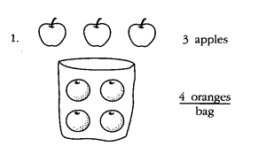
We consider in this example that the apples and oranges are conceptualized as singleton apples and oranges, that is, as (1-unit)s and {1-unit}s, respectively.
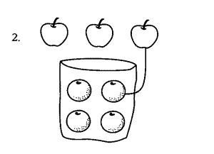
Measurement of discrete quantity is accomplished by matching (1-unit)s of the to-be-measured quantity with {1-unit}s of the measurement quantity. Here one apple is matched with one orange. With considerable additional cognition, one could determine at this point that the measure of this one apple with respect to the measure unit of 1-bag is one 1/4 bag (or 1 [1/4-unit]). In a similar sense we can now determine that the quotitive division, 1 apple divided by 4 oranges per bag is one 1/4 bag. Where illustrations of measurement are involved, we take the point of view throughout that the cognition necessary to determine the measure is done only when the set of objects to be measured through the matching process has been exhausted.
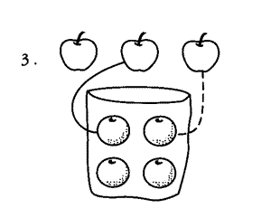
A second apple, or (1-unit), of the quantity to be measured is matched with a second orange, or {1-unit}, of the measurement quantity; in the meantime, the first matched pair is dropped from attention.
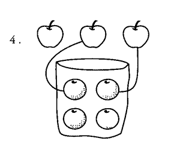
The matchings are accumulated; that is, both matched pairings are brought into cognitive attention.
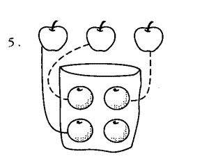
Matching the third, and last apple, with a third orange is accomplished. In the meantime the first two matched pairs are dropped from attention. One can now observe why it is necessary to cognize the apples and oranges as individual singleton units, since matching is accomplished by cognizing and acting upon individual objects as single cognitive entities.
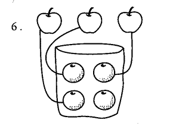
The matchings are accumulated.
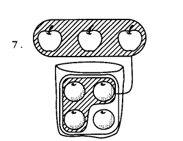
Measurement of the discrete set of apples using the 4 oranges per bag indirectly establishes the cardinality of the set of apples by establishing the cardinality of a subset of the oranges. Since cardinality is an attribute of a composite of objects and not of the individual objects, it is necessary to unitize the 3 apples into a composite 3-apple unit, the 4 oranges into a composite 4-orange unit, and the 3 matched oranges into a composite 3-orange subunit. Finally, a single matching is established between the composite 3-apple unit and the 3- orange unit, and the measure of the 3-apple unit is established by finding the fractional bagfulness determined by the 3-orange composite unit. The individual apples and oranges could now lose their identity and could be cognized generically as units of fruit. The "bagfulness" of the 3-orange unit is one 3/4 bag, that is, 1(3/4 unit). The subtlety of why we call this one 3/4 bag rather than 3/4 of a 1-bag is discussed later in the general discussion of the bridging notation.
We now offer a mathematics of quantity representation that fits both the contextual picture model and the bridging model, using the grouping-symbol unit notation along with the words and apple and orange to aid the reader. For symbolic processing of 3 apples ÷ 4 oranges, it is necessary at some point in the process to transform apple units and orange units into a common unit, such as fruit. Numbers in parentheses correspond to step and numbers in the illustration above.
The Bridging Notation.
As suggested, we will use any mark, especially, 0, *, and  to denote real objects, as in the example 0 to denote an apple, * to denote
an orange, and
to denote real objects, as in the example 0 to denote an apple, * to denote
an orange, and  to denote a fruit. When an object (denoted by any of 0, *, or
to denote a fruit. When an object (denoted by any of 0, *, or  )
is conceptualized not just as an object but as a 1-object unit (such as
a 1-apple unit, 1-orange unit, or 1-fruit unit), we enclose the symbol
for the object within grouping symbols, 0, [ ], or { }. Thus, (0), [*],
and {
)
is conceptualized not just as an object but as a 1-object unit (such as
a 1-apple unit, 1-orange unit, or 1-fruit unit), we enclose the symbol
for the object within grouping symbols, 0, [ ], or { }. Thus, (0), [*],
and { } could
denote units of 1-apple, 1-orange, and 1-fruit in our previous example.
When different grouping symbols are used to denote a unit, it is to be
assumed that the units come from different measure spaces. Groups of 1-object
units will be represented as (0) (0) (0) (0) or [*] [*] [*] and using
the notation (1-unit) for a 1-object unit we will denote the preceding
groups as 4 (1-unit)s and 3 [1-unit]s, respectively.
} could
denote units of 1-apple, 1-orange, and 1-fruit in our previous example.
When different grouping symbols are used to denote a unit, it is to be
assumed that the units come from different measure spaces. Groups of 1-object
units will be represented as (0) (0) (0) (0) or [*] [*] [*] and using
the notation (1-unit) for a 1-object unit we will denote the preceding
groups as 4 (1-unit)s and 3 [1-unit]s, respectively.
We will account for two types of composite units with our notation. A composite unit of 3 objects will be represented as (000), and a composite of 3 1-object units - that is, a composite of 3 (1-unit)s - as ((0) (0) (0)). Both are notated algebraically as 1 (3-unit). (More correctly ((0) (0) (0)) is a unit-of-units, a concept that we introduce shortly.) Composite units of n objects and of n 1-object units will be represented similarly. We observe in passing that unitization (and reunitization) is a cognitive process that we have attempted to represent externally, both with the bridging notation and the algebraic notation of mathematics of quantity.
|
|
|||||||||||||||||||||||||||||||||||||||||||||||||||||||||||||||||||||
|
1.
|
(1)
|
||||||||||||||||||||||||||||||||||||||||||||||||||||||||||||||||||||
|
2.
|
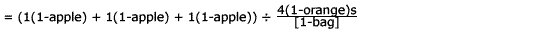 |
(2)
|
|||||||||||||||||||||||||||||||||||||||||||||||||||||||||||||||||||
|
3.
|
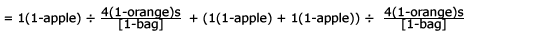 |
(3)
|
|||||||||||||||||||||||||||||||||||||||||||||||||||||||||||||||||||
|
4.
|
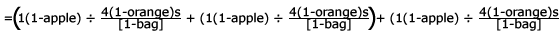 |
(4)
|
|||||||||||||||||||||||||||||||||||||||||||||||||||||||||||||||||||
|
5.
|
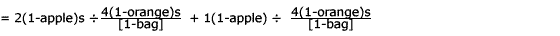 |
(5)
|
|||||||||||||||||||||||||||||||||||||||||||||||||||||||||||||||||||
|
6.
|
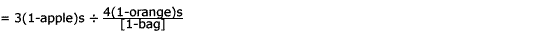 |
(6)
|
|||||||||||||||||||||||||||||||||||||||||||||||||||||||||||||||||||
|
7.
|
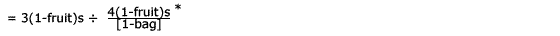 |
(7)
|
|||||||||||||||||||||||||||||||||||||||||||||||||||||||||||||||||||
|
8.
|
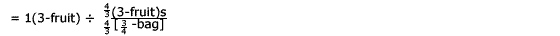 |
(7)
|
|||||||||||||||||||||||||||||||||||||||||||||||||||||||||||||||||||
|
9.
|
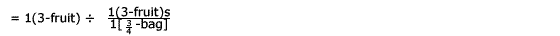 |
(7)
|
|||||||||||||||||||||||||||||||||||||||||||||||||||||||||||||||||||
|
10.
|
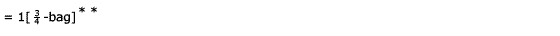 |
(7)
|
|||||||||||||||||||||||||||||||||||||||||||||||||||||||||||||||||||
|
|
|||||||||||||||||||||||||||||||||||||||||||||||||||||||||||||||||||||
|
*This is a convention we adopt to show a unit conversion to a superunit. In this case, apple units and orange units are sub-measure space units of the fruit-unit measure space. In general, if () and {} denote units from two measure spaces and there is a third measure of which each is a subspace, we denote the superspace unit with the boldface overprint of the two grouping symbols used for the subspaces: in this case, overprints in boldface type of (and { and ) and } for left and right parentheses, respectively. Thus the grouping symbol used to denote the superspace units for () and {} is (&{and}&). **It may at first seem strange to the reader to think of division of 3 apples by 4 oranges per bag as being equal to a 3/4 bag. But consider an analogous situation: The two situation are essentially the same except for the familiarity of the context. To determine the measure of a 5 cm length with a meter stick graduated into decimeters only, may not be an everyday occurrence, but nothing seems strange about the symbolic statement. This is likely because we immediately recognize that decimeters and centimeters can be changed to a common unit and can therefor be canceled as the symbolic processing is carried out. But this concern for a common unit is necessary for symbolic processing of the division, not for processing the the division at the level of manipulative aids. At the level of manipulative aids one need not be concerned about apples and oranges per se, but just that the quantity 4 objects per unit is being used to measure 3 objects and the 3 objects are not contained in the 4 objects (as a subset relationship). We turn next
to the question of how a collection of discrete objects serves as
a measure unit. From our perspective, a measure unit is an intensive
quantity such as 4 oranges per bag. We need to consider two types
of measure units (we illustrate using 4 discrete objects): One type
of measure unit is composed of 1(4-unit) per [1-unit] and another
of 4 (1-unit)s per [1-unit], which are notated respectively as [(*
* * *)] and [(*) (*) (*) (*)]. Conceptually the 1-unit denoted by
the [ ] plays the same role as the bag or the cup in our earlier
examples. On occasion we will need to represent and interpret a
fractional part of a composite unit and of the two types of measure
units. We will use the traditional means of shading to designate
a fractional part of a unit of discrete objects. For example, ( Although it
has only one application in this chapter, we introduce a final concept
of composite units, namely units-of-units. The need to conceptualize
units-of-units arises for the learner and knower of fraction concepts
in a situation where an (8-unit) is used in a part-whole representation
of 3/4. The (8-unit) - (0 0 0 0 0 0 0 0) - would first be partitioned
into 4 groups of 2 - (00/00/00/00)-and then the groups of two are
unitized-((00)(00)(00)(00)). When the 4 (2-unit)s are unitized into
a composite unit, the result is a composite unit-of- units, in this
case we denote it as 1(4(2-unit)s-unit). Similarly, ((000) (000)
(000) (000) (000)) is a (5-unit) composition of (3-unit)s; that
is, 1(5(3-unit)s-unit). We will apply part-whole fraction designation
to units-of-units; (( We note that composite units-of-units may have several interpretations; that is, they can be reunitized in various ways. When a child counts five longs (Dienes's blocks) as "1, 2,3,4,5; 50," there are two implicit recognitions about the composite 5-unit of (10-unit)s or 1(5(10-unit)s-unit). The counting 1, 2, 3, 4, 5 indicates awareness that the 1(5(10-unit)s-unit) constitutes a (5-unit) (underlining here is to suggest that the cognizer is aware that the unit is a composite). Announcement that the cardinality of the composite unit-of-units in terms of units of one demonstrates recognition that the 1(5(10-unit)s-unit) represents the same amount of quantity as 1(50-unit). THE FUNCTION OF UNIT TYPES. We have suggested that x discrete objects can be cognitively unitized as follows: x(1-units), 1(x-unit), x(1-units) / [1-unit], and 1(x-unit)/[1-unit]; in addition, n(x-unit)s can be unitized as a composite unit-of-units, 1(n(x-unit)s-unit). The same is true of a continuous object visually segmented into x continuous subsections of equal measure (Steffe, 1989). Each of these unit types can function in certain capacities as follows:
An important question is how a child forms units and constructs relationships among the units suggested in the above list. The analyses given later in this chapter (see also Behr, Harel, Post, & Lesh, 1990) based on the bridging notation suggests how manipulation of objects would facilitate children's construction of such units. It remains for curriculum development and research to create problem situations whose solutions would involve these manipulations and to determine whether such solutions can be created by children. In addition, teachers may need help with this perspective on rational numbers and rational number problem situations. Various authors take the view that one model of 4 x 3 is an expression such as 4 x (3 apples). This model is to indicate to children that 4, the multiplier, tells the number of times to replicate the set of 3 apples. This is called scalar multiplication. In our view, however, scalar multiplication is an advanced mathematical construct that has no basis in experience. It is not the set of 3 apples that is replicated but a relationship of 3 apples to one-unit. Thus the model for 4 x 3 is 4[1-units] with 3(1-units) per each [1-unit]. This formulation agrees with a units analysis approach in which one thinks of "canceling the units" in the expression 4[1-units] x 3(1-units)/[1-unit]; the indicated multiplication then has the meaning of forming the 3(1-units) for [1-unit] relationship for each of the 4[1-units]. This way, the cancellation of the unit labels corresponds to a reunitization of the 4 3(1-unit)s to [1-unit] relationship to 12 (1-unit)s. According to this thinking, the interpretation of 4 x (3 apples) is as 4 sets x 3 apples per set. This model for 4 x 3 is also different from Schwartz's (1988) model, which proposes thinking of 4 x (3 apples) as 4 apples per apple times 3 apples. If one considers problems as origins of mathematical models, then both our formulation and Schwartz's are necessary. Schwartz's formulation is the appropriate model for the problem:
The interpretation of 4 x 3 that we have given is, however, the better model for the problem:
Both of these formulations have been used in our analysis of the operator concept of rational number. UNIT-CONVERSION PRINCIPLES. We have identified several basic unit-conversion principles for solving whole and rational number word and computation problems.
A note is necessary about what interpretation can be given to the equal sign in this context. Since any of the variables used above denote real numbers, and any string of symbols within a pair of grouping symbols denotes a unit of measure, any symbol string such as c(d-unit)s must denote a quantity. Thus the equal sign in this context, as in any mathematical context, indicates that the symbol strings on each side of it are names for the same quantity. No indications are given of the syntactic or semantic transformations necessary to derive one member of an equality from the other. These equations are external representations of the equivalence of a quantity under different unitizations. While we do capture some of the external manifestations of the cognition involved in these reunitizations with the bridging notation, we make no such claims for the algebraic notation. A View of the Literature Children as young as 6 and 11 years old can deal with problems that depend on these principles. Steffe (1988) reports a child named Zackery who was able to abstract 4 x 10 from a set of cards arranged in order within suits, but who was unable to reconceptualize the cards arranged by denomination across suits as 10 x 4 - an application of the second unit-conversion principle. Pirie (1988) tells of an 11-year-old named Katie who was working on the task 6 1/3 ÷ 2/3 and commented that the actual drawing of pictures and the 2/3 pieces was "boring." She suggested that "6 wholes would have 6 times 3...18 thirds and half that number of two-thirds." So, 6 1/3 has 19 thirds and 9 1/2 two-thirds. This thinking is easily modeled by using unit labels, and unit conversion principles as follows:
Hunting (1981) investigated the performance of students in grades 4, 6, and 8 on numerous sharing tasks, which he interpreted in terms of formation and reformation of composite units. Examples of these tasks follow, with interpretations in terms of units notation. One situation involved showing 4 dolls and 12 cookies to the child and asking how many cookies each doll would get if the cookies were shared equally. This was analyzed by Hunting (represented in our notation) as the problem 1(12 cookie-unit) = 4(x cookie-unit)s, find x A second task was to take 25 cookies and share them among some dolls so that each doll gets five cookies. As a task in reunitization, this has the form 1(25 cookie-unit) = x(5 cookie-unit)s, find x Each of these two tasks involve unit-conversion principle 3, with a = 1. Another task with a, b, c, and d 1, which Hunting used and interpreted as a units task, asked the child to take 8 piles of 3 cookies and rearrange them so that 4 dolls could share them equally. This problem has the form 8(3 cookie-unit)s = 4(x cookie-unit)s. Hunting found his subjects (grades 4, 6, and 8) to be quite successful with these kinds of problems. The strategy most frequently used by these subjects involved anticipating the solution based on whole-number knowledge rather than experimenting with solutions by manipulating objects. Can much younger children construct the knowledge necessary to solve such problems through experiences with manipulative aids? We believe curriculum development should provide children with problem situations that give them an experiential base for internalizing the unit-conversion principles they will apply to the concepts of fraction, rational number, rate, ratio, and proportion, as well as to multiplication and division problems that are more sophisticated than those traditionally given. Moreover, we maintain that research needs to determine the extent to which problem situations in both the whole and rational number domains could be provided as early as first grade. An unpublished study by the Rational Number Project focused on the knowledge structures that children use in their attempts to solve problems of the form x is a/b of y where x and a / b are given and y is the unit whole; problems of the form y = c / b with c greater than b were also investigated. The concern of this study is the flexibility of the concept of unit, where units vary across a wide domain of contexts and complexity of numerical relationships. The tasks presented fifth grade students with a fractional part of a unit whole and asked them to reconstruct the unit, some part of the unit, or some multiple of the unit. These problems were posed in both continuous and discrete situations. Student responses fall into one of five response categories.
Categories 1 and 2 generally led to correct solutions while categories 3, 4, and 5 did not. Some conclusions that we made from these results follow. Reconstruction of the whole, given a fractional part of the whole, is more difficult than the more common task of partitioning to find a specific fractional part of a unit whole. This was explained in terms of the additional m-space (Case & Sandieson, 1988) required for the former task. The data suggest that the discrete context is easier for children initially, probably because discrete interpretations are amenable to already well-developed counting procedures, where continuous formats are not. Continuous formats must invoke concepts of rational number partitioning that are not readily derived from previously internalized counting procedures. Usual instruction on fractions involves providing a process for finding and perceiving a fraction as part of a whole; 3/5, for example, is perceived as embedded in the whole. A deeper perception of 3/5 (Novillis, 1976) is to conceive a separate entity that is 3/5 as much (as long, as big, as sour) as the given unit. This concept of fraction likely helps develop the notion of 3/5 as an entity in addition to being 3 of 5 parts. Instruction on fractions is incomplete if it does not distinguish a fraction from the whole of which it is part. Among the low-scoring subjects in our study, only 28% of the responses were in categories 1 and 2, suggesting again that fraction concepts are difficult for many children even into grade 5. Children who were subjects in this teaching experiment had instruction and review of the process of solving these problems. What can be expected from school children in regular classrooms in grades 5 and above, even into high school? Although not addressed directly by our research, the question of when it is most appropriate to begin relating these two reversible processes should receive future research attention. Typical instruction on fractions in schools emphasizes the part-whole construct. This reinforces the perception of 3/5 as 3 of 5 parts, but not as the iteration of 3 abstract units of size one-fifth - that is, as 3(1/5-unit)s. We propose that rational number instruction limited to the part-whole construct is inadequate to develop a complete understanding of rational numbers and should be extended to include other constructs in the context of mathematics of quantity. Semantic Analysis-Overview. We have been conducting analyses of whole number and rational number concepts and operations. One of our current analyses is of the subconstructs of rational numbers, and we present partial results in this section. The rational-number subconstruct analysis employs two notations, the bridging notation and the notation of mathematics of quantity, and relies heavily on the conceptualizations of unit formation, reunitization, and principles of units conversion. The thrust of the analysis is to use the bridging notation to represent the physical manipulations that would be embodied in real world problem situations, in order to facilitate learners' development of the construct. We believe that this bridging notation strongly exhibits the semantics of the mathematics involved in the rational-number construct. During the analysis, representation of the physical manipulations by the bridging notation interacts with the mathematical analysis. The result is nearly a one-for-one matching between a sequence of manipulations of physical objects and a sequence of manipulations of mathematical symbols. We claim that this matching indicates that the manipulation of objects, from which children's understanding arises, is also a true representation of the mathematics involved. Thus, we claim to be able to offer situations from which children can (not necessarily will) construct knowledge for understanding the mathematics. The analysis considers the part-whole, quotient, and operator subconstructs of rational numbers. We report our analysis of the part-whole and quotient subconstructs in some depth after giving an overview of where our analysis has progressed to, some of the general considerations involved in the analysis, and some of the resulting interpretations of rational numbers. Researchers of rational numbers, as well as teachers of the concepts, normally think of using both discrete and continuous quantity representations for rational numbers. In this chapter we limit our report to analysis based on discrete quantity, with several exceptions. Our choice of discrete quantity over continuous quantity is based on the assertion by Bigelow et al. (1989) that children's first concepts of rational numbers should be based on experience with discrete quantities. Moreover, our analysis suggests that the concepts children need to work with continuous quantity have their basis in situations involving discrete quantity. The choice was necessary because a description of the totality of the analysis that we have underway would go well beyond the scope of this chapter. We present in Figure 14.1 a flowchart to illustrate some of the considerations that went into the analysis and interpretations of rational numbers. Interpretations of Rational Number: We next consider some demonstrations to give information about the analysis of rational-number constructs of pan-whole and quotient. Following the demonstrations on the pan-whole and quotient constructs, we give a brief overview of the considerations that have gone into the analysis of the operator construct, but a full report of this analysis goes beyond the scope of this chapter. The Part- Whole Construct. Using a units analysis, the part-whole subconstruct leads to two interpretations of rational numbers; we illustrate with 3/4. THREE-FOURTHS AS PARTS OF A WHOLE. The units interpretation of three-fourths as parts of a whole is 3(1/4-unit)s for continuous quantity and 3 (1/4(4(n-unit)s)-unit)s for discrete quantity. (A note on reading the notation for units-of-units: To determine the basic type of unit expressed, look for the right-most symbol string, "-unit)"; then look for the first numeral (or variable) inside the left-most parenthesis. The combination of these define the basic unit type. Thus, (1/4(4(2-unit)s)-unit) is basically a (1/4-unit) - it could also be thought of as (1/4(4-unit)-unit) - while (4(2-unit)s-unit) is basically a (4-unit). Because of the difference in the notation for the continuous-quantity unit and the discrete-quantity unit, it appears at first that the interpretation of three-fourths differs across the two types of quantity. However, the conceptual outcome in each case is that three-fourths is three 1/4 units. We illustrate the physical manipulations to arrive at these interpretations with both a discrete-quantity model and a continuous-quantity model in Figures 14.2 and 14.3, respectively. Similar demonstrations hold for any (4n-unit); where n = 1, 2, 3, ..., each would lead to the interpretation of three-fourths as 3(1/4(4(n-unit)s-unit)-unit)s. THREE-FOURTHS AS A COMPOSITE PART OF A WHOLE. The units interpretation of three-fourths as a composite unit is 1(3/4-unit); a presentation with the bridging notation is given in Figure 14-4. We omit a continuous quantity for this construct. Similar demonstrations hold for any (4n-unit); where n = 1, 2, 3, ..., each would lead to the interpretation of three-fourths as (3/4(4(n-unit)s)-unit). Evidence that children make these interpretations is given by Behr, et al. (1983). |
|||||||||||||||||||||||||||||||||||||||||||||||||||||||||||||||||||||
|
The Quotient Construct. We consider the quotient construct of rational numbers from perspectives of both quotitive and partitive division. To get a complete picture of a rational number as a quotient one needs to consider several variables. Consideration should be given to both continuous and discrete quantity and to different possible unitizations of the numerator and denominator. In the rational number x / y the numerator can be interpreted as x(1-unit)s or as 1(x-unit). The denominator can be similarly interpreted as y(1-unit)s or 1(y-unit). To date, our analysis for partitive division has considered the two cases for the numerator but only the case for y(1-unit)s for the denominator. PARTITIVE DIVISION. Two interpretations of a rational number result from a partitive interpretation of division. One interpretation leads to the concept that three-fourths is 3(1/4-unit)s per [1-unit]; the other, that three-fourths is 1/4(3-unit) per [1-unit]. We illustrate the first interpretation using the bridging notation based on discrete (Figure 14.5) and continuous (Figure 14.6) quantity and follow this with a corresponding mathematics-of-quantity representation. In the mathematics-of-quantity model that follows (Figure 14.7), we demonstrate the related nature of the continuous, discrete, and mathematical models by noting in parentheses, following each step in the mathematical derivation, the corresponding steps in the discrete (Figure 14.5) and continuous (Figure 14.6) models. The notation used in the continuous model (Figure 14.6) represents a true model of how some children are known to solve such problems through sharing (other partitions are given in the literature and can be modeled by this notation equally well). They do this by first equi-partitioning each of the 3(1-units) into four parts and then distributing these parts equitably among the 4[1-units] (Kieren, Nelson, & Smith, 1985). On the other hand, if 3 is interpreted as a composite 1(3-unit) instead of as 3(1-units) as above, this gives 3/4 as 1/4(3-unit) per [1-unit], or for the discrete case (Figure 14.8), as 1/4(3(4-unit)s-unit) per [1-unit]. A note to the interested reader: The model for the continuous case can be constructed by choosing for the numerator quantity one (3-unit) in the form of three circular regions and then carefully following the type of partitioning that is done with the (3-unit)s of four discrete objects. In an investigation of partitioning behavior of children in grades 6,7, and 8, Kieren and Nelson (1981) presented the task of shading the amount one child gets if 3 candy bars are shared equally by 4 children. The candy bars were presented as three rectangles partitioned into 8 parts. Of 196 responses, 12.5% interpreted the three candy bars as one composite unit — one (3-unit) — and (apparently) gave the following left to right partition and solution (Figure 14.9). This solution suggests that three-fourths is 1/4(3-unit). This partition given represents a lower level of partitioning performance (Bigelow, et al., 1989) than one based on successive halving as we illustrated for the discrete case above (Figure 14.8). However, we suggest that children need the experience of interacting with other children and teachers in making partitions. Figure 14.10 presents another partition of a (3-unit) that children can accomplish with urging from a teacher. QUOTITIVE DIVISION. Each of the two representations that arise from the partitive-division interpretation involves the quotient of two extensive quantities, and the result is a representation of the rational number 3/4 as intensive quantity. Two additional representations for the quotient subconstruct of rational numbers result from the quotitive (measurement) meaning of division. We find four ways to look at this division according to two different interpretations of the numerator, as 3(1-units) or as a composite 1(3-unit), and according to two similar interpretations for the denominator. Because of space considerations, we give demonstrations for the 3(1-unit)s interpretation of the numerator with the two interpretations of the denominator (Figures 14.11 and 14.13) respectively. Figure 14.12 presents the mathematics-of-quantity model that corresponds to the demonstration in Figure 14.11. In this case, we are able to match statements in the mathematics-of- quantity model almost one for one with steps in the diagram, so numbers from the diagram are indicated in parentheses at the end of each algebraic statement to note the correspondence. The cognition we hypothesize as necessary to go from step 7 to step 8 in Figure 14.11 and Figure 14.13 and the corresponding symbolic process deserves comment. We hypothesize first (step 7, Figure 14.11) that in order to assign a magnitude to the quantity to be measured - conceptualized as 3(1-unit)s - it needs to be reconceptualized as the composite unit, or 1(3-unit). To be sure, one can think of the measure of a quantity as being the sum of the measures of its parts, as in finding the total area of some irregular geometric regions. But we hypothesize that even in this case the assignment of a single number and unit as the measure of a quantity implies conceptualization of the quantity as a single cognitive entity. This is consistent with the interpretation of the difference in children's responses to the directions of "count these objects" as compared to "tell me how many things there are here." In the first instance, most children count and say "1, 2, 3, 4, ..., n"; in the second case they will count in the same way, pause, and repeat "n." Saying "n" a second time in the latter case is interpreted to mean that the child distinguishes between counting as a process of establishing a one-to-one correspondence and giving the cardinality (the measure) of the collection of things. It is assumed (Markman, 1979) that cardinality is an attribute of a collection, not of the individual elements in the collection. Similarly, we assume measure of a quantity is an attribute of the quantity conceptualized as an entity and not an attribute of its constituent parts. The assumption that the quantity to be measured is cognized as a composite unit introduces an additional requirement that the quantity to which it is matched in the measurement process is also conceptualized as a composite unit. Thus, in step 8 of Figure 14.11, it is suggested that the three [1/4-unit]s of step 7 are reunitized as 1[ 3/4-unit] composite unit. These hypotheses refer to the essential cognitive structures needed to complete the measurement process at the level of manipulative materials. The corresponding symbolic processing (steps 7-10, Figure 14.12) responds to two sets of constraints-to model the manipulative processing as closely as possible, and to obey the syntax rules of the symbol system. The syntax rules for handling symbolic quantity units, in particular the syntax operation of canceling units, requires that the units be the same; this is represented in step 7 of Figure 14.12. Here it is assumed that the unit represented by the ( ) - that is, the print-over of ( on { and of ) on }- is a common unit to the units represented by ( ) and { }. This is analogous to the situation in our motivational example in which units of "apple" and "orange" were changed to the common unit of "fruit." If our motive in Figure 14.12 had been to give the briefest symbolic sequence, step 7 could have been transformed to the following alternate step 8: and then to and then to Note that the reconceptualization of 3{1-unit}s as 1{3-unit} is not modeled in this alternative symbolic sequence. It is in the interest of responding to both sets of constraints that the more complicated steps 8 and 9 are given in Figure 14.12. On the Operator Construct. The operator concept of rational numbers suggests that the rational number 3/4 is thought of as a function applied to some number, object, or set. As such we can think of an application of the numerator quantity to the object, followed by the denominator quantity applied to this result, or vice versa. The basic notion is that the natural-number numerator causes an extension of the quantity, while the denominator causes a contraction. The question of the nature of the extension and contraction leads to interesting variations of this construct of rational number. Accordingly, we give to the numerator and denominator the following paired interpretations: 1. Duplicator and partition reducer, 2. Stretcher and shrinker, 3. Multiplier and divisor. The analyses of interpretations 2 and 3 that we have conducted suggest that certain conditions lead to at least two hybrid interpretations: 4. Stretcher and divisor, 5. Multiplier and shrinker. These hybrid pairings arise because of different ways that a learner might cognize units following the application of a stretcher in interpretation 2, or following a multiplier in interpretation 3. THE DUPLICATOR/PARTITION-REDUCER INTERPRETATION. The duplicator/partition-reducer interpretation seems the most basic and closest to the application of the concept in the domain of manipulative materials or real objects. Our ongoing analysis has given attention to both discrete and continuous quantities and to the question of the order in which the duplication and partition-reducer operators are applied. Issues of units composition and recomposition become very significant in these analyses. THE STRETCHER/SHRINKER CONSTRUCT. There is an important conceptual and mathematical difference between a stretch of some continuous unit, or a set of discrete objects conceptualized as a unit, and a repeat-add or duplicate of either of these units. A repeat-add or duplication are iterative actions on the entire conceptual unit. A stretch or shrink, on the other hand, acts uniformly on any subset of discrete objects or on a continuous subset of points of a continuous object to transform it into one that measures n times the original subset. This raises important considerations for providing experiences to help children conceive the stretcher/shrinker operator as one interpretation of rational numbers. To interpret rational numbers by way of the stretcher/shrinker operator, we consider the numerator to be a stretcher and the denominator a shrinker. With symbolic representation in terms of mathematics of quantity, the outcome of applying a rational number to some unit does not change regardless of the order of applying the stretcher and shrinker; moreover, the process does not change substantially. In the domain of physical representations, on the other hand, the process does vary considerably. THE MULTIPLIER-DIVISOR INTERPRETATION. For this interpretation we consider various meanings of multiplier-repeat-adder, times- as-many (or greater-than) factor, first factor in a cross-product - and also various meanings of divisor-partitive divisor, quotitive divisor, times-as-few (smaller-than) factor-and finally two types of quantity - discrete and continuous. Our thinking is that the times-as-many (greater-than) factor and times-fewer (less) combination is exactly the same as the stretcher/shrinker interpretation, and that the first component of a cross-product is not a possible (at least not a reasonable) interpretation. Thus, the analysis we have under way considers numerator as repeat-adder, denominator as partitive and quotitive divisor, numerator operator applied first, and denominator operator applied first. Section Summary This section of the chapter had several purposes. One was to call attention to critical deficiencies in the mathematics curricula of elementary and middle schools. We identified five areas where the teaching of multiplicative structures is deficient:
A second purpose was to suggest that research and development leading to curricular reform should be guided by an extensive content/semantic analysis of the domain of multiplicative structures or, more specifically, the portion of this domain concerned with rational number, ratio, and proportion. A goal of our analysis is to provide a theoretical context that will guide research into the cognition underlying students’ manipulations in transforming physical representations. A second goal is to associate these manipulations with the abstract representation of mathematics of quantity. We claim that our bridging notation is essentially a one-to-one map between learners' cognitive structures and the mathematics-of-quantity representation. The initial results from this analysis suggest that the concepts in the multiplicative structures domain are inextricably interrelated and exceedingly complex. The purpose of a content/semantic analysis is to make use of the knowledge gained from research into the knowledge structures that children form in cognizing concepts in the content domain and to make assumptions about the necessary cognitive structures where research is lacking. These assumptions suggest further research issues and questions. For example, numerous assumptions were made in the demonstrations about unit formation and reformation. Can these formations and reformations be conceptualized by children? Research needs to address the issue of whether situations can be developed that will help children construct implicit and intuitive knowledge about unit conversion principles first, and then explicit knowledge of them. Analyses of rational number constructs suggest that their understanding depends on a grasp of these unit conversion principles as well as rather deep knowledge about concepts of measurement. We argue that future research and curriculum development should be based on and improve our analysis of multiplicative structures. A great deal of effort will be necessary to develop situations from which children can construct knowledge about these ideas. For example, research has given us some information about children's ability to partition both discrete and continuous quantity (Hunting, 1986; Kieren & Nelson, 1981; Pothier & Sawada, 1983), but little is known about instructional situations that might facilitate children's ability to panition. PRINCIPLES
FOR QUALITATIVE REASONING Mathematical Variability-A Fundamental Issue The flexibility of thought that Resnick (1986) mentions as a characteristic of intuitive knowledge is readily observable in children's protocols involving intuitive reasoning. (Harel & Behr, 1988; Kieren, 1988; Pirie, 1988; Post, Wachsmuth, Lesh, & Behr, 1985; Resnick, 1982, 1986). One can observe a flexible interaction among different levels of representation or understanding (Kieren, 1988) - for example, between thought directed at actual manipulative aids, or mental images of the manipulation, and an oral or written symbolic representation of the quantities involved. Moreover, while one does not often see explicit reference to mathematical principles (for example, principles of place value [Resnick, 1986]) in these protocols, consistent behavior and uniform solution strategies suggest understandings that can be abstracted from the protocols in the form of mathematical principles. Germane to this section are the numerous observations that suggest an implicit awareness of the invariance, or a compensation for variation, of the value of a quantity under certain transformations. Awareness of invariance (or variation) or the search for invariance under certain transformations is a central concept, almost a defining concept, of mathematical thinking. Invariance and compensation for variation are basic to many areas of elementary mathematics-the development of basic fact strategies (Carpenter & Moser, 1982), children's invention and use of alternative computation algorithms (Harel & Behr, 1988; Pirie, 1988; Resnick, 1986), as well as fraction equivalence and proportion problems (Lesh et al., 1988). Research on rational-number learning suggests the importance of fraction order and equivalence to the understanding of a rational number as an entity (that is, as a single number) and to the understanding of the size of the number (Post et al., 1985; Smith, 1988). Fundamentally, the question of whether two rational numbers are equivalent or which is less is a question of invariance or variation of a multiplicative relation (Lesh, et al., 1988). Two rational numbers a/b and c/d, can be compared in terms of equivalence or nonequivalence by investigating whether there is a transformation of a / b to c / d , defined as changes from a to c and from b to d, under which the multiplicative relationship between a and b is or is not invariant. In the current mathematics curriculum, the issue of fraction order and equivalence is treated as an isolated topic rather than as a special instance of mathematical variability. We view the concepts of fraction order and equivalence and proportionality as one component of this very significant and global mathematical concept. Fraction equivalence can be viewed in the context of the invariance of a multiplicative relation between the numerator and denominator, or as the invariance of a quotient. Research and development must address the need to provide children in early elementary grades with situations that involve variability. There are two issues here. First, children require adequate experience to understand what is meant by the concept of change, or difference. For example, the question of what change in 4 will result in 8 is one that very young children can deal with. Moreover, as early as possible, children should be brought to understand that the change in 4 to get 8 (or the difference between 4 and 8) can be defined in two ways: additively (with an addition or a subtraction rule) or multiplicatively (with a multiplication or a division rule). The additive rule for changing 4 to 8 is to "add 4," while the multiplicative rule is to "multiply by 2." The additive-change rule to get 8 from 4 is the same as to get 17 from 13; this is not true for multiplication. The second issue is the investigation of change and the direction of change in additive and multiplicative relationships and operations under transformation on the components in the relation or operation. While the additive relation between 4 and 8 is invariant under the transformation of adding 9 to both 4 and 8, this is not true for the multiplicative relation between the same two numbers. The ability to represent change (or difference) in both additive and multiplicative terms and to understand their behavior under transformation is fundamental to understanding fraction and ratio equivalence. The mathematics curriculum needs to develop learning situations, problems, and computation that will help children develop at least an implicit understanding of the principles that underlie mathematical invariance. That is, the curriculum should provide school experience to help children construct intuitive knowledge about fraction and ratio equivalence. Situations must be developed in which children systematically build their understanding of principles that underlie the invariance and the compensation for variation within additive, subtractive, multiplicative and divisitive relations and operations. The goal is to help children construct these principles as "theorems in action" (Vergnaud, 1988). Qualitative Reasoning. In our research on children's thinking strategies applied to fraction and proportion tasks, we became interested in children's ability to reason qualitatively about the order relation between fractions and between ratios. Our interest was in children's use of qualitative reasoning about situations modeled by a / b = c, including reasoning such as, if a stays the same and b increases then a / b decreases, or if both a and b increase, then qualitative methods of reasoning are no longer adequate to determine whether a / b increases, decreases, or stays the same in value, and quantitative procedures are necessary. The concern in qualitative reasoning about a situation modeled by the equation a / b = c is to determine the direction, as opposed to the amount, of change (or no change) in c as a result of information about only the direction of change (or no change) in a and b, or to establish that the direction of change is indeterminate based only on qualitative reasoning. Our thinking about the role of qualitative reasoning was influenced by the work of Chi and Glaser (1982), who found that expert problem solvers are known to reason qualitatively about problem components and relationships among them before attempting to describe these components and relationships in quantitative terms. Consensus is that experts’ reasoning about a problem leads to a superior problem representation that enables the expert to know when qualitative reasoning is inadequate and quantitative reasoning is necessary. It is not the case that experts use qualitative reasoning and novices do not; rather, experts’ qualitative reasoning is based on scientific principles and involves formation of relationships among problem components based on these principles. Novices, on the other hand, reason about the surface structure of the problem. It appears that the qualitative reasoning to which Chi and Glaser refer is not unlike the schooled intuitive reasoning to which Kieren (1988) refers. The issue in this section is to present basic principles upon which to base intuitive knowledge about fraction order and equivalence and proportional reasoning. They are principles that need to become self-evident to children through experience. These principles should then provide the basis for flexible application of additive and multiplicative notation and transformation rules to the solution of problems involving fraction or ratio equivalence (Resnick, 1986). There are two aspects to our analysis of qualitative reasoning as applied to a problem involving questions of fraction order or equivalence or the proportionality of two ratios. One aspect of the problem is determinability: Can the order relation requested in the problem be determined through qualitative reasoning? The second aspect concerns determination: What is the order relation requested in the problem, if it can be determined? These questions are discussed in the next two sections. The discussion is a recapitulation of an analysis in Harel et al. (in press). Principles for Solving Multiplicative Tasks Two Categories of Multiplicative Tasks. In Harel et al., (in press) we showed that, from the perspective of invariance of relations, proportion tasks can be classified into two broad categories: invariance of ratio and invariance of product. The orange juice task used by Noelting (1980) and the balance beam task used by Siegler (1976) are representatives of these two categories, respectively. In the orange juice task, one of two pairs of ratios -amount of water to amount of orange concentrate, or amount of water to total amount of mixture - are compared across two mixtures to determine which one tastes the more orangy or if they taste the same. In the balance task, the expected solution procedure is to compare the products of the values of the distance and the weight of objects on each side of the fulcrum to determine which side of the balance beam goes down. Strictly speaking, a task would be classified according to the way a given subject solved it. For the sake of discussion we classify these two tasks according to expected solution procedures; most subjects do solve the tasks as expected. Quite different mathematical principles, and thus different reasoning patterns, are involved in the solution of the invariance-of-ratio and the invariance-of-product tasks. To describe principles forming the basis for qualitative reasoning about these two types of tasks, we introduce a refinement of each type. We identify two subcategories of the invariance-of- product category and illustrate the subcategories with hypothetical balance beam or orange juice tasks. FIND-PRODUCT-ORDER SUBCATEGORY. This subcategory consists of problems in which order relations between values of corresponding task quantities are given, and these order relations form the factors of the two products. These problems ask about the relation between two values of the quantity represented by the product. For example, let a1 and a2 denote the weights of objects placed on each side of the fulcrum of a balance beam, and let b1 and b2 represent their respective distances from the fulcrum. Further, suppose it is given that a1 < a2 and that b1 = b2. Which side of the fulcrum will go down? That is, the task is to determine the relationship between the products k1 = a1 x b1 and k2 = a2 x b2. We call attention to the fact that the information given in this task is about the directionality of the order relations, and it need not include specific numerical values for the weights and distances. This is characteristic of a qualitative proportional reasoning task. Different forms of the task can be formulated by taking all possible combinations of the three order relations between a1 and a2 and the three possible order relations between b1 and b2. The order relation between k1 and k2 will in some cases be indeterminate through qualitative reasoning alone. FIND-FACTOR-ORDER SUBCATEGORY. This category consists of problems in which an order relation is given between values of quantities represented by two products and an order relation is given between two corresponding factors in the two products. The problem asks about an order relation between the other two factors. If in the example above it were given that a1 < a2 and k1 = k2, where k1 = a1 x b1 and k2 = a2 x b2 and the question was about the order relation between b1 and b2, then this would be an exemplar of this subcategory. Likewise, there are two subcategories of the invariance-of- ratio category FIND-RATE-ORDER SUBCATEGORY. This subcategory consists of problems that give two order relations between values of corresponding quantities in two rate pairs and ask about the order relation between the values of the quantities represented by the two rates. An example can be formulated from the orange juice context of Noelting (1980). If two orange juice mixtures (1 and 2) are made from amounts of water a1 and a2 with a1 < a2 and amounts of orange concentrate b1 and b2 with b1 = b2, which of the two mixtures, 1 or 2, tastes the more orangy, or do they taste the same? The decision of which is more orangy would be based on the order relation between the two ratios a1/b1 and a2/b2, or between a1/(a1 + b1) and a2/(a2 + b2). FIND-RATE-QUANTITY SUBCATEGORY. This subcategory consists of problems that give an order relationship between the value of quantities represented by two rates and an order relation between the values of two corresponding quantities in the two rate pairs, the problem asks about the other order relation between the values of the two corresponding quantities in the two rate pairs. Again, an example can be formulated from the orange juice context. If two orange juice mixtures (1 and 2) were made so that mixture 1 tastes more orangy than mixture 2 (that is, a1/ b2 > a2/ b2 and the amount of orange concentrate in mixture 1 is greater than the amount of orange concentrate in mixture 2 (that is, a1 > a2), then which of the mixtures has more water, or do they both have the same amount? Multiplicative Determinability and Determination Principles. Each of the four subcategories of problems involves two number pairs, a and b, c and d, and either a pair of products a x b and c x d or a pair of ratios a/b and c/d. For each of the three pairs in a given problem there are three possible order relations; the structure of the problems in the subcategories above is that the order relations between two of the three pairs are given and the problem is to (a) decide if the third order relation is determinable from the given information and if so (b) to ascertain what that order relation is. The knowledge required to solve these kinds of tasks relies on principles that we have placed into two categories - multiplicative determinability principles and multiplicative determination principles. The multiplicative determinability category consists of principles that specify the conditions under which order relations between factors in the product of the values of two quantities can lead to declaring whether the order relation between the values of these quantities is determinate or indeterminate (for example, if a and b are equal but c and d are unequal, then the order relation between the products a x c and b x d is determinate). The multiplicative determination category consists of principles that specify the conditions under which order relations between factors of two quantities can lead to declaring that the relation between the two quantities is less than, greater than, or equal to (for example, if a and b are equal but c is greater than d, then the relation that holds between a / c and b / d is that a/c < b/d). The principles in the first class of multiplicative determinability category give information about the determinability of the order relation between products. When order information is given about corresponding factors within each product, we refer to these as product composition (PC) principles.
We offer some examples, in this case from the balance beam context, to illustrate problems in which these principles are the mathematical formulation of the knowledge needed to solve the problem. A classmate knows that Billy is heavier than Jane, and he tells Billy to sit farther from the center of a teeter-totter than Jane. Before he has Billy and Jane exert the force of their weight onto the teeter-totter, he tells the class about the relationship between their weights and then asks the class to tell which end of the teeter-totter - Billy’s or Jane’s - will go down. In this case the direction of movement of the teeter-totter, off horizontal is indeterminate from the information given. To be able to determine the order relation of the two angular moments, numerical data on Billy and Jane's weight and distance would be needed and the moments would need to be calculated. Another example: A classmate tells the class that Billy weighs 90 lbs and Jane 80 lbs. He has Billy sit 4 ft from the center of the teeter-totter and Jane 3 ft; he gives everyone in the class this information and asks which side of the teeter-totter will go down. In this case (a) the direction of the order relation between moments (that is, the order relation between the weight and distance products) is determinate and (b) Billy's side will go down. Notice that the directionality of the order relations of the respective weights and distances is sufficient to determine the order relation between the moments; there was not a need to compute the exact moments to determine this order relation. This is what characterizes the solution as qualitative or intuitive. If for some reason, say by teacher direction, calculation of the moments was required, and if the solver actually compared these computed values to determine the order relation, then the solution would be characterized as quantitative. Nevertheless, one can see how a prior qualitative analysis of the problem could guide the quantitative calculations and serve as a check on them. We also state principles on which knowledge is based to decide the determinability of the order of one pair of factors of a product when the order relation between the other two factors and the product are given. We refer to these principles as product decomposition (PD) principles.
An example where PD1 can be applied, constructed from the balance beam context: A classmate has Billy and Jane sit on a teeter-totter so that Jane's side would go down. Billy is heavier than Jane. Is Jane's distance from the center equal to, less than, or greater than Billy's distance from the center? In this case the requested order relationship is (a) determinate and (b) Jane's distance from the center is greater than Billy's. The structure of this problem in terms of the stated principles is that the order relationship between the product of weight and distance from the center is given for both Billy and Jane and the order relation between their weights is given. The question is about the relationship between the other corresponding factors-distances from the center-in the two products. Note that, if the problem is changed so that Billy's weight is less than Jane's, then the order relationship between the distances is indeterminate based on the given qualitative data. Two ratio composition (RC) principles make up the third category of determinability principles.
We offer an example constructed from the orange juice context: If the amount of water in mixture 1 is less than in mixture 2 and the amount of orange concentrate in mixture 1 is less than in mixture 2, then the relationship between the orangy tastes of mixtures 1 and 2 is indeterminate (that is, the relationship between the two water-to-concentrate ratios is indeterminate). On the other hand, if the amount of water in mixture 1 is less than in mixture 2 and the amount of orange concentrate in mixture 1 is greater than in mixture 2, then (a) the order relation between the two water-to-concentrate ratios is determinate and (b) the water-to-concentrate ratio for mixture 1 is greater than for mixture 2, so mixture 1 tastes more watery and less orangy. Once a determinability principle is applied and the requested order relation is found to be determinable, then a determination principle can be applied to ascertain whether that relation is the less-than, equal-to, or greater-than relation. There is a determination principle that corresponds to the determinability principles; we denote them by [PC1], [PD1], [RC1], and [RD1]. For example, [PD1] is as follows: if c ³ d and a x c < b x d then the order relation between a and b is a < b. The entire set of determinability and determination principles can be easily summarized into a concise as shown in
Table 14.1. Success on problems from the find-rate and find- product
subcategories can be achieved by reasoning as to how a qualitative
change in a1 to get a2 and b1 to get b2 affects the size and thus
the comparison of k1 and k2, where k1 = a1 x b1 (or a1/b1) and k2
= a2 x b2 (or a2/b2). The changes in a1 to get a2 and b1 to get
b2, and k1 to get k2 can be denoted by Selecting a pair of values, one from an axis and another within the body of the table along the row or column of the first, and then locating the corresponding value on the other axis, Table 14.1 describes the knowledge about the qualitative relationships among problem quantities needed to solve problems from the find-rate-quantity and find-product subcategories. We give two examples to illustrate the information in the Table 14.1. We have two fractions and we know that the numerator of the first is greater than the numerator of the second (that is, the change from the first to the second is -indicating a decrease) and that the two fractions are the same size (the change in value of fraction 1 to get fraction 2 is 0, that is, no change). Is the denominator of the first fraction less than, greater than, or equal to the denominator of the second fraction? We can analyze the problem in this way: The change from numerator 1 to numerator 2 is - (a decrease in the numerator), find - on the horizontal axis of Table 14.1. The change from fraction 1 to fraction 2 is 0 (no change), so we look for 0 in the body of the table in the column under -. Since the only 0 in this column appears implicitly, under the guise of ?, we move along that row to the vertical axis and conclude that the direction of change from denominator 1 to denominator 2 is a decrease. Again we note that it is only the direction of change that we determine from the table, not the amount of change. Next consider the situation of having two products, we know that one factor decreases and that the product decreases. What happens to the other factor? Using the table, we notice that under the column for a decrease in the first factor, a minus sign (-), indicating a decrease in the product appears three times: twice explicitly, and once under the guise of an indeterminate (?). Thus the change in the second factor can be any one of +, -, or 0 because anyone of three (horizontal axis entry, table entry, vertical axis deduction) is possible-( -, -, + ), ( -, -, 0), and ( -, -, -). Now suppose we have two products, product 1 and product 2, and that the change in the first factor of product 1 to the first factor of product 2 is an increase, and the same for factor 2. What is the order relation between product 1 and product 2? We find + on the left of the table, and + on the top; the qualitative change in the product, +, is given in the body of the table at the intersection of the row and column in parentheses, ( + ). If both factors of a product increase, then the product increases as well. Section Conclusion Qualitative reasoning is known to be a significant variable in problem-solving performance. Expert problem-solvers are known to reason qualitatively about problem components and relationships among them before attempting to describe these components and relationships in quantitative terms (Chi & Glaser, 1982). The consensus of research is that an expert's reasoning about a problem leads to a superior problem representation because it contains numerous qualitative considerations about problem components and their interactions (Chi et al., 1981; Chi & Glaser, 1982; Chi, Glaser, & Rees, 1982). While some tasks used in traditional studies of the proportion concept make it possible for subjects to solve the task using qualitative reasoning (for example, Siegler & Vago, 1978; Siegler, 1976; Karplus, Pulos, & Stage ,1983; Noelting, 1980), it has only been very recently that qualitative reasoning has become an object of study in this area of research. Studies on Qualitative Rational-Number and Ratio Reasoning. Harel, et al, (in press) compared the tasks used by the researchers cited in the conclusion above using several criteria, including whether the tasks were solvable by qualitative reasoning alone. They found that some variations of the balance scale task (Siegler, 1976) were solvable by qualitative reasoning; for example when there is more weight on one side of the fulcrum and the weight on the other side is further from the fulcrum. Noelting (1980) gave 23 orange concentrate and water mixture tasks, of which only two were solvable by qualitative reasoning; for example, those where the differences in amounts of orange concentrate and water between two mixtures could be defined as ( + , -) and ( -, + ) according to Table 14.1. All of the other tasks were of the form (+, +) or (-, -). The fullness tasks given by Siegler and Vago (1978) require quantitative reasoning. The question of whether children can use qualitative reasoning in solving fraction-equivalence and proportion problems has been investigated by the Rational Number Project. A study reported by Heller, Ahlgren, Post, Behr, and Lesh (1989) investigated seventh-grade children's performance on numerica1 (quantitative) and qualitative problems, using both missing-value and comparison-type problems. Examples of qualitative missing-value and comparison-type problems, respectively, follow.
A conclusion drawn from their work was that qualitative reasoning is helpful (not completely necessary) but certainly not sufficient for successful performance on quantitative proportional-reasoning problems. They found that some subjects' performance on the qualitative problems was low, while their performance on quantitative proportion problems was high. They concluded that quantitative proportional-reasoning problems can be solved without good qualitative proportional reasoning by applying memorized procedures. They suggest that intuitive understanding of the direction of change (qualitative understanding) in the value of a ratio or fraction should precede quantitative exercises. Another study reported by Larson, Behr, Harel, Post, Lesh (1989) directly investigated qualitative-reasoning ability among seventh-grade children. The tasks required the child to determine whether the value of a fraction or ratio would increase, decrease, or stay the same under given changes in the numerator or denominator as follows: Increase(I)/Decrease(D), D/I, D/D, Same(S)/I, and I/S. Based on the protocol data collected, numerous unsuccessful qualitative-reasoning strategies were identified, and several successful ones as well. We call attention to some of the more interesting strategies. One category of strategies, observed on tasks in which the changes in the numerator and denominator were in the same direction, suggest that some children believe the value of a fraction or ratio changes in the same direction as the changes in its two components. Another category of responses suggests that the child believes a greater change in one of the two components will result in some change in the value of the fraction or ratio. A refinement of this strategy by some children is that the direction of change in the value of the fraction or ratio is in the same direction as the directional effect of the component that has the greater amount of change. For example, if it is given that both the numerator and denominator increase, the child may reply that it depends on which one changes most; if the denominator increases most, then the value of the fraction or ratio will decrease. Some children mulled over a change in the value of the fraction or ratio in a sort of composition-of-effects strategy: For example, given that the numerator increases and the denominator decreases, they would reason that increasing the numerator causes an increase in the value of the fraction, decreasing the denominator causes an increase in the value of the fraction, the two increases together result in an increase. These results were obtained at different times during a teaching experiment, and they suggest that instructional situations can lead children to reason qualitatively about the size of fractions and ratios. It should be noted that these children, having attained seventh grade, had already learned other quantitative strategies for comparing fractions and ratios; a certain amount of unlearning of existing incorrect strategies was necessary before the new strategies could be successfully applied. Greater success might be possible with a younger child whose thinking about fractions and ratios was less affected by prior knowledge of quantitative strategies. In a third study (Harel et al., in press) a "blocks task" was developed specifically to investigate children's qualitative reasoning in a proportion context. The task involved two pairs of composite blocks (A, B) and (C, D) with A and C constructed from the same kind of smaller (unit) blocks, which were nevertheless larger than those used to construct B and D. The number of unit blocks in A was less than the number of unit blocks in C, and these numbers remained constant across all variations of the blocks tasks used in the study. Three instances of blocks B and D were used in which the number of unit blocks was one less, the same, or one more, compared to A and C, respectively. Given information about the weight relationship between and A and B (<, = , >) in the context of a visually observable number relationship among the four composite blocks, seventh-grade children were asked to determine the weight relationship between C and D. Of 27 possible task variations, 9 were used in the study. Of particular interest in this study were the type of problem representations that children formed in response to the problem presentation, the solution strategies that were used, and the relationship between the sophistication of the problem representation and the solution strategy: Hierarchies of three problem representations and three categories of solution strategies with two solution strategies in the high category, three in the middle, and one in the low category were identified. A high correlation was found between the level of the problem representation and the level of solution strategy. By matching a type of problem representation with its most highly correlated solution strategy, a hierarchy of six solution processes was identified. A high correlation was found between the level of solution process and the level of the students’ mathematics ability. Van den Brink and Streefland (1979) give evidence that children as young as 6 and 7 years old have intuitive knowledge about ratios and proportions that suggests implicit knowledge of the principles given in this section. They tell of a child who, during a discussion with his father about how the propeller of a ship works, looked at a toy boat, referred to a picture in his room of a large sea-going ship with a man standing near the propeller, and inquired of his father how big the propeller on such a ship really is. "It wouldn't fit into your room," answered the father. After some moments of reflection the child responded,
The authors indicate that the child compared the relationship between the seagoing ship's propeller (bigger than the boy's room) and his father to the picture of the big ship with a man beside the propeller. By qualitatively maintaining an invariant relationship between man and propeller, the child confirms his father's statement that the ship's propeller would be bigger than his room. In her dissertation, Larnon (1989) identified 16 proportion problem types by crossing four problem dimensions with four semantic categories. The problem dimensions were relative/absolute change, recognization of ratio-preserving mappings, covariance/invariance, and construction of ratio-preserving mappings; the semantic categories were well-chunked measures, part-part-whole, unrelated sets, and stretchers/shrinkers. She notes that recognizing relative change is likely an important prerequisite to moving beyond additive relationships into multiplicative structures. Multiplicative relationships arise from an evaluation of the size of a change by considering its relationship to the starting values and not merely in terms of its absolute amount. The problem dimensions of relative/absolute change and covariance/invariance are particularly germane to the issues raised in this section. She found that the performance of sixth-grade students on relative/absolute change across the semantic categories (in the order given above) was 6.8%, 57.4%, 83.3%, and 18.9%. Performance of sixth-grade students on the covariance/invariance problem dimension across the four semantic types was 72.3%, 79.5%, 60.5%, and 50.0%. Tasks on this dimension involve ability to recognize variability or invariance of the relationship between the two components of a ratio (or fraction) under change in each component. Teaching for Qualitative Reasoning. While the evidence to date is sketchy, there is a trend in the direction of supporting the notion that qualitative knowledge can be constructed through school situations. Moreover, though the evidence is again slight, a reasonable hypothesis seems to be that the qualitative knowledge an individual has about a situation is similar to what Resnick and Kieren have referred to as intuitive knowledge. It is knowledge that "belongs" to the individual, is constructed from real experience, and provides for considerable flexibility in thought. The work of Chi and her colleagues gives an important reason for stating principles on which to base qualitative reasoning about proportional situations. A characteristic of experts’ qualitative reasoning as compared to the qualitative reasoning of novices is that it proceeds at a semantically deep level and incorporates principles of the content domain. The qualitative reasoning of novices, on the other hand, is at the surface level and is directed at comparison of formulas and procedures for attempting to isolate the problem unknown. The aim of initial instruction in rational numbers and proportions should be to put children in situations where they are able to construct principles to apply qualitatively to questions of order, equivalence, and size of fractions and ratios. The objective of helping children construct principles for qualitative reasoning is based on the belief that this knowledge can guide their quantitative thinking, as it does for experts, in a content domain. Research needs to determine how knowledge of principles for qualitative thinking and the ability to think qualitatively will help children make connections between this intuitive, informal knowledge and the symbol system that is the basis for quantitative methods. While work in this area has advanced in the domain of early numbers, very little has been done in the area of rational numbers and proportions. Recent work (Mack, 1990) represents a beginning. Mack points out that numerous studies demonstrate that children possess a store of informal knowledge about fractions. The issue she addresses is whether instruction can build on this informal knowledge in a way that extends it to, or connects with, the formal system of fraction notation. An instructional move in her work that seems to help children make this connection is to give a child a problem in symbolic form and ask the child to reason about it in terms of a real situation. Mack (1990) reports that while children were able to build on their informal knowledge, the results also suggest that knowledge of rote procedures interferes with their attempts to construct procedures that are meaningful to them. Van den Brink and Streefland (1979) give suggestions for the type of instruction that would help children develop intuitive or qualitative knowledge about the principles stated in this section. We give an example of an instructional situation that they suggest. A story is told to the class about Liz Thumb, who once upon a time became as small as a thumb. Liz Thumb is pictured on a worksheet, and students are asked to draw common objects into the picture - a flower, a stone, one of the child's own shoes, and the like. These drawings will demonstrate children's conceptions of ratio, and discussion among the students and the teacher can help the class to come to agreement about how big the drawn objects should be and why. The Semantic Analysis of Rational Number: Some Implications for Curriculum In section 2 of this chapter, "Rational Number Construct Theory: Toward a Semantic Analysis," we showed that any rational number x/y can be interpreted in anyone of four ways x/y(1-unit), x(1/y-unit), 1/y(x-unit) and 1(x/y-unit). Another analysis we have underway deals with operations on rational numbers from the perspective of mathematics of quantity. Each of the four different interpretations of rational numbers can be shown to be embedded in real world, or at least in conceivable textbook word problems. Our analysis of rational-number operations from the perspective of mathematics of quantity has progressed most with the operation of division. We will use problem examples in this domain to illustrate the richness of problem situations and alternative problem representations, as well as solution procedures that arise from the analysis. Division Problem Examples. We will present one problem with some analysis of its solution from the perspectives of the embedded rational-number interpretations and the mathematics of quantity involved. In addition, we will present other problems to represent their possible range, but we give only the mathematical model that could be used to solve them and the interpretations of rational number that are represented. The numbers are the same in each of the example problems to make comparison among models and rational-number interpretations easier. We will give two solutions of a problem, based on different problem representations. We call attention to the fact that solving problems such as these depends on an understanding of the different interpretations of rational numbers and on the different unit-conversion principles; these problems are not expected to facilitate initial learning of these notions. They would provide situations in which they can be applied in order to deepen the understanding, but knowing the rational-number interpretations listed in the opening sentence of this section and the unit-conversion principles listed earlier are considered prerequisite knowledge to problem interpretation and representation. The following problem is presented to illustrate.
We can interpret this problem in more than one way. Traditionally, it would be interpreted as a multistep problem involving multiplication and division. Using this interpretation and notation, which is analogous to that which we used in section 2 for the mathematics of quantity, the solution of the problem could be as follows: First, identify the problem quantities as 6(1-tube)s of paint in 1(1-mixture), 2(1-piece)s of wood, and 1/8(1-m2) measure of each piece of wood. The question is to find the number of (1-tube)s per each (1-m2), then needed computations are carried out,
We offer some observations about this problem representation and solution. Rather than there being a holistic problem representation, the components of the problem are represented separately and, later in the third step of the solution, the solver must remember or determine (depending on whether he has a problem plan) how these two components go together. Moreover, the solver must remember or determine that the quantities computed in steps 1 and 2 must be divided and must decide which is the dividend and divisor, respectively. In the tree diagram that we give later for this problem, the solution would be considered bottom-up rather than top-down. This solution represents all the problem quantities in terms of singleton units. Does this give a relatively strong cognitive representation of the problem, or would other unitizations of the problem quantities lead to a more powerful representation? The solution process illustrated might be characterized as first interpreting units, then converting units to units of one, followed by partitive division. With an alternative interpretation of the units, it is a partitive division followed by units conversion. That is, if we identify the given quantities as 1/8(6-tube) and 2(1/8-m2)s, it remains to find the number of (1-tube)s per each (1-m2). The steps in the solution based on this problem representation would be as follows:
In contrast to the first solution, this one proceeds from a holistic problem representation and each subsequent step of the problem can be derived from the one before it using previously learned principles of units formation and conversion. This solution could be described as top-down rather than bottom-up. We see several interpretations of fractions in this solution: 6/8 as 1/8(6-unit), 2/8 as 2(1/8-unit)s, and 3/8 as 3(1/8-unit)s. Thus, while one might consider this a higher-level problem representation, it appears that the problem representation and solution also requires a higher level of thinking. But the development and use of higher-order thinking is something that we advocate for mathematics curricula in middle school and earlier grades. Another possible advantage to our second interpretation is that it leads to uniformity in problem representation across division problems. In terms of a hierarchical tree-structure for the problem (see Figure 14.14), our interpretation represents the division (the central operation in the problem) at the top level of the tree. The two multiplications are at lower levels. The traditional approach (our first interpretation) to solving the problem would perform the multiplications first and then use these results as operands in the division, a bottom-up solution. A top-down solution would perform the division first and then do a units conversion. The issue of problem representation in this context is similar to the one Larkin (1989) discussed for algebraic equations. Important research questions about problem representation lurk here. Our analysis of partitive division problems has led us to identify three stages in the solution of partitive division word or computational problems: (a) units interpretation, (b) distributing and counting units (or putting in and counting units), and (c) units conversion. It appears that the units interpretation is the first step, while (b) and (c) are interchangeable. In the first solution, (c) was done before (b); in the second, the order was reversed. Other Division Problem Examples.
A Wider Set of Problem Situations. Restricted interpretations of arithmetic operations and prescribed problem interpretations and representations in the curriculum has led to a limited range of problem situations and thus, in children, to constrained cognitive models for these operations. Because to date our analysis has concentrated on division, the thrust of our remarks on this issue will concern division, with some references to addition. CHILDREN'S MODELS FOR DIVISION. Fischbein, Deri, Nello, and Marino (1985) indicate that the dominant models children and (Graeber et al., 1989) teachers use to solve multiplication and division problems have a very limited range of applicability. Work by Kouba (1986), Fischbein et al. (1985), and Greer (1987) clearly suggests that distribution is by far the dominant model. The distribution model and the problem types to which it is applicable leads to conceptions such as "the divisor must be a whole number." Our analysis suggests the existence of another model for partitive division, which we call the put-in model. This model is characterized by physically, or conceptually, putting the objects represented by the dividend into the object(s) represented by the divisor. MORE APPROPRIATE MODELS FOR DIVISION. Units interpretation interacts in an important way with appropriate models or representations for division problems. There are four question types for a division word problem with the given quantities x(a-unit)s and y[b-units]:
Mathematics of quantity suggests at least two strategies to answer each of these questions. One strategy is to compute the quotient of x divided by y and then do appropriate conversion of units; that is, use the problem representation x(a-unit)s ÷ y[b-unit]s and proceed in a top-down order for the solution. The second is to convert units as appropriate, so that the (given) units in the problem data statement correspond to the (target) units in the problem question. The former might be a more powerful problem representation; it provides for a common problem representation for anyone of the four questions, and it avoids the matter of classification of problems as multistep (question 4 above) or as extraneous data (questions 1, 2, and 3). Still a third method is to convert all the problem quantities to units of one and then proceed. This representation seems to be the least efficient and least accurate representation of some of the problem forms. The necessary numerical computation resulting from either strategy is essentially the same; the efficiency comes through the understanding exemplified in the holistic problem representation (Larkin, 1989). Important research issues about problem representation are implicit in this discussion. Some examples of research issues that can be investigated are:
Links Between Additive and Multiplicative Structures. Considering the arithmetic of whole and rational numbers from the joint perspectives of units-composition, decomposition, and conversion-and the mathematics of quantity provides an essential link between whole-number concepts (the additive conceptual field [Vergnaud, 1983]) and multiplicative concepts, including rational-number concepts, (the multiplicative conceptual field). First-grade children use a concrete-quantity representation for 2 + 5, such as 2 apples plus 5 apples gives 7 apples. Abstractly, this has the form 2(1-unit)s + 5(1-unit)s = 7(1-unit)s; an analogous model holds for 2/8 + 5/8: 2(1-eighth-unit)s + 5(1-eighth-unit)s equals 7(1-eighth-unit)s. A situation of 2 stones plus 5 boys is cause for pause because stones and boys do not add in the same way as apples and apples, unless a common counting unit is found for stones and boys - objects, for example. Similarly, for 2/4 + 5/6 there is the same need for a common counting unit. A firm understanding of the need for a common counting unit for addition situations, along with the recognition that 2/4 and 5/6 can be considered to be 2(1/4-unit)s and 5(1/6-unit)s, should help to lay the conceptual base for avoiding the addition of 2/4 and 5/6 as 7/10. Another type of whole-number problem that will help develop conceptual understanding of the need for common counting units is the following (the problem form is more important than its context):
This, again, is traditionally a multistep problem; the first step, multiplication, changes everything to units of one in spite of the fact that the problem question asks about composite units of two. To our knowledge, how children might solve this problem before school instruction forces this solution model on them is not known; some recent but limited pilot work suggests a likely solution to be to change the bags of 4 candies and 6 candies to bags of 2 candies, that is, to convert to the unit requested in the problem question and then count or add to find the total number of bags of 2 candies. In terms of our notation, this problem solution is as follows:
We call attention to the conceptual similarity between this problem and 2/4 + 5/6: (a) units interpretation indicates a need for a common unit, (b) the magnitude of the common unit is a common divisor of the two given units, (c) units conversion is needed before counting units (that is, addition) can take place. After this, the strategy for solving the whole-number problem and the fraction addition problem is conceptually and procedurally exactly the same. We consider the following questions to be of fundamental importance to research and development in the area of multiplicative structures: (a) Do firm cognitive links exist between the two systems? (b) If cognitive links do exist, what are they? (c) If cognitive links exist between the two structures, how can we help children develop these links? (d) Does the acquisition of these links facilitate the transition to the field of multiplicative structures so that learning of concepts, operations, and relationships in this complex domain would be easier than it currently is for children? (e) If such links are found to exist, can multiplicative concepts be learned earlier in the curriculum and be somewhat concurrent with learning about additive structures? We believe that some important links do exist, and part of our current analysis seeks to identify them. Unfortunately, we have not progressed sufficiently far to be able to elaborate at this point in time. TEACHING STUDIES AND RATIONAL NUMBER CONCEPTS In the following sections we examine current research on teaching and the implications of these studies on the teaching of rational numbers in classroom settings. We begin with programs that have not directly involved rational numbers, and move progressively toward considering investigations that give explicit attention to rational numbers. Cognitively Guided Instruction The Cognitively Guided Instruction (CGI) Research Paradigm acknowledges four fundamental assumptions that appear to underlie much contemporary cognitive research on childrens’ learning (Peterson, Fennema, & Carpenter, in press; Cobb, Yackel, & Wood, 1988).
The CGI model basically assumes research-based knowledge of children’s learning within specific content domains. To date, the CGI model has been used only with primary children’s addition and subtraction concepts, although attempts are currently under way to provide implications for other situations (Carpenter & Fennema, personal communication, November 1989). In a recent study relating teachers’ knowledge to student problem-solving behavior with one-step addition and subtraction word problems, Peterson et al. (in press) suggested four CGI principles for applying research-based knowledge of children’s learning from classroom instruction.
The primary Wisconsin CGI study was conducted with 40 first-grade teachers, half of whom participated a four-week summer CGI program. Participants were urged to develop instructional sequences based on their interpretations of the research literature on children’s learning of addition and subtraction. Many of the successful CGI teachers adapted a loosely structured discussion format where students were encouraged to solve problems their own way and to look for alternative solution strategies. Students of CGI teachers had encouraging achievement results, and the CGI teachers appeared to have a better grasp of students’ capabilities and solution strategies. It is important to understand here that the CGI model attempted to capitalize on children’s previous knowledge of addition and subtraction, which they had essentially acquired prior to formal instruction. In fact, didactic formal instruction in the traditional sense of the word, was not an element in the Cognitively Guided Instructional model. The basic research into children’s understanding of addition and subtraction concepts involves the join, separate, combine, and compare types of problems that are discussed frequently in the literature (Moser, 1988; Carpenter, Heibert, & Moser, 1981; Carpenter & Moser, 1982). What implications might the CGI model have for research into teaching and learning rational number concepts? It is not at all clear that the basic tenets of the CGI model are directly generalizable to the more complex mathematical structures embedded in rational-number usage. The subtle complexities within the domain are recurring themes in research papers. With the introduction of the domain of rational-number concepts comes a cognitively complex multivariate system requiring relativistic thinking, a system where counting strategies and their variations no longer form the basis of successful solution strategies. The following differences between addition-and-subtraction studies and rational number studies highlight difficulties involved in generalizing the CGI model:
It appears, then, that research on teaching rational numbers will be more complex than research on teaching additive structures. We suspect that research models will be firmly "situated" (Grenno, 1983) in specific topics within the domains of rational numbers, proportional reasoning, and other multiplicative structures. We envision a more direct approach to instruction, one with less emphasis on traditional objectives and more attention to complex conceptual underpinnings for the domain. Attention to children’s knowledge construction will, of course, be an essential element. Teachers must always be encouraged to learn about student constructions and thinking strategies. It does not follow, however, that students cannot or should not receive mathematical knowledge from teachers, that mathematics instruction should not be organized to facilitate the teachers' clear presentation of knowledge, that the structure of mathematics should not provide a basis for sequencing topics of instruction, or that mathematical skills cannot be integrated and taught along with student understanding and problem solving. As we look to the decade ahead, we are reminded of Gage's (1989) admonition to once again make use of a variety of research paradigms in our attempts to provide more viable and more informed research on teaching. The Rational Number Project has employed one paradigm that appears to hold promise for research on teaching rational-number concepts and operation, proportions, geometry, and the like. Its theory base is discussed and its implications for research on teaching is presented in the next section. Rational Number Project Teaching Experiments The Rational Number Project (RNP) has been researching children's learning of rational-number concepts (part-whole, ratio, decimal, operator-and-quotient, and proportional relationships) since 1979. The project has conducted experimental studies (Cramer, Post, & Behr, 1989), surveys (Heller, Post, Behr, & Lesh, 1990), and teaching experiments (Behr, Wachsmuth, Post, and Lesh, 1984; Post et al., 1985). The primary source of RNP data has been four different teaching experiments conducted with students in grades 4, 5, and 7. Our teaching experiments focused on the process of mathematical concept development rather than on achievement as measured by written tests. They were conducted with 6-9 students and involved observation of the instructional process by persons other than the instructor. Instruction was controlled by detailed lesson plans (in some cases scripted), activities, written tests, and student interviews. As in most teaching experiments, our interest was to observe the learning process as it occurred and to gauge the depth and direction of student understandings resulting from interaction with carefully constructed, theory-based, instructional materials. The interview was the primary source of data. The interview is ideally suited to obtain detailed information about an individual’s acquisition of new mathematical concepts. Our interviews began as structured sets of questions but quickly became tailored to the specific responses given by students. Consequently, we were able to probe student interest and appeal, while at the same time assessing the depth of student understandings and misunderstandings. Careful study of transcribed interviews (protocols) resulted in insights about students’ evolving cognitions. The RNP conducted teaching experiments that were 12, 18, 30, and 17 weeks in duration and that were conducted simultaneously in the Twin Cities area and in DeKalb, Illinois. Weekly interviews given to each student were transcribed and analyzed. In this way, each individual’s progress was charted. Since some of the questions were repeated from session to session, it was possible to be quite precise in documenting individual development, the stability of conceptual attainment, and areas of need. It was also possible to contrast each student’s progress with the others’, although that was not a primary concern. This contrast was conducted not for grading purposes but to identify patterns of growth and understanding across students. Since statistical assumptions of significantly large numbers of subjects were not met, alternative analytic strategies were employed. These included protocol and videotape analysis and the use of descriptive statistics. Teaching experiments are not easy to generalize, but this shortcoming is compensated for by the richness of the information provided. In one case, the understanding unearthed in one of the teaching experiments was tested in an experimental setting with well-defined experimental and control conditions (Cramer et al., 1989). Rational
Number Project Teaching Experiments: The Rational Number Project has relied on two basic theoretical models for the development and execution of its four teaching experiments. We must state initially that our position is squarely within the cognitive psychological camp. We have been influenced by the work of Piaget (1965), Dienes (Dienes & Golding, 1971), Bruner (1966) and a host of more contemporary researchers. We, like Dienes (1960), believe that learning mathematics can ultimately be integrated into one’s personality and become a means of genuine personal fulfillment. We have embraced the four basic components of his theory of mathematics learning (the dynamic principle, perceptual variability, mathematical variability, and the constructivity principle) and have tried to embed their substance and spirit within our student materials. In our materials we have utilized the play stage of student development and have made provision for the transformation of play into more-structured stages of fuller awareness (the dynamic principle). In addition, we have actualized the notion that construction precedes analysis (constructivity principle) by focusing heavily on individuals’ interaction with their environment. We have also provided opportunities for students to talk about mathematics with their peers. In more contemporary terms, we approached instruction from a constructivist perspective. The two variability principles were used to guide the construction of the teaching experiment lessons. The model employed is essentially a two-dimensional matrix with one of the variability principles defining each dimension. The model as originally suggested involved numeration systems, with various manipulative materials contrasted to several number bases (Reys & Post, 1973; Post, 1974). It was quickly realized that the mathematical and perceptional variability principles applied to a wide array of mathematical entities, rational numbers included. In our initial model, the five rational- number subconstructs identified by Kieren (1976) constituted the mathematical variability dimension, while a wide array of manipulated materials made up the perceptual variability dimension. This original model appears in Figure 14.15. At this point we had a "helicopter" perspective of the teaching experiments. What remained was to develop sequences of lessons within appropriate cells in the matrix. Dienes contended that, psychologically, the perceptual variability provides the opportunity for mathematical abstraction, while the mathematical variability is concerned with the generalization of the concept(s) under consideration. Certainly, both are important aspects of mathematical conceptual development. Additionally, the variability principles provide for some attention to individualized learning rates and learning styles. The lessons would require very active physical and mental involvement on the part of the learner. The scope and sequence of the rational-number lessons appear in Table 14.2 (Behr et al., 1984). Having now the basic orientation as to the broad parameters of our instructional development, attention must be paid to the specific nature of the ways in which individuals would interact with these mathematical concepts. We found Bruner’s (1966) notion of modes of representation useful in this regard. In his early work, Bruner suggested that an idea might exist at three levels - or modes - of representation (inactive, iconic, and symbolic). Although never specifically stated by Bruner, these modes were interpreted to occur in a linear and sequential order. Literally generations of curricula were developed suggesting first inactive, then iconic, and then symbolic involvement on the part of the student; a misinterpretation of Bruner’s (1966) original intent (Lesh, personal communication, 1975). Realizing the artificial nature of such linearity, Lesh (1979) extended the model to two additional modes (spoken symbols and real-world situations), eliminated the linearity, and stressed the interactive nature of these modes of representation. Various analyses have shown that manipulative aids are just one part of the development of mathematical concepts. Other modes of representation - for example, pictorial, verbal, symbolic, and real-world situations - also play a role (Lesh, Landau, & Hamilton, 1983). The model suggests, and it has been our contention, that the translations within and between modes of representation make ideas meaningful for children. The Lesh translation model appears in Figure 14.16. The reader will note the inclusion of Bruner's three modes of representation as the central triangle in this model. Arrows denote translations between modes and the concurrent ability to reconceptualize a given idea in a different mode. For example, asking a student to draw a picture of 1/2 plus 1/3 (first written on the blackboard) would be a translation from written symbols to pictures, a translation between modes. Similarly, asking a child to demonstrate 2/3 with Cuisenaire rods, given a display of 2/3 with fraction circles, represents a translation within modes - in this case, an instance of Dienes’ perceptual-variability principle. Post (1988) elaborates on the cognitive function of these translations. Implications for Teaching Within the domain of mathematics learning, perceptual variability is hypothesized by Dienes (1960) to promote mathematical abstraction, while mathematical variability provides for generalization and the opportunity for expanded understanding of broader perspectives of the issues under consideration. In a similar fashion, teachers need to be exposed to various aspects of teaching in a wide variety of conditions or contexts. For this reason, it is important to focus on a broad spectrum of teacher roles (for example, as an instructor of large and small groups, as a tutor, as a student, as an interviewer, as diagnostician, as a confidant, and so forth.) and to relate these roles to specific tasks teachers are expected to perform (Leinhardt & Greeno, 1986). Just as mathematical abstractions are not themselves contained in the materials which children use, abstractions and generalizations relating to the teaching profession are not necessarily embedded in any single role which the teacher might assume. Such abstractions and generalizations can only be extracted from consideration of a variety of situational, contextual, and model activities, roles, and tasks. In the same way that children are encouraged to discuss similarities and differences between various isomorphs of mathematical concepts, teachers should be encouraged to discuss similarities and differences between pedagogically related actions in various mathematical contexts. A wide variety of avenues should be exploited to provide the foundation for these discussions. Clinically based experiences, videotapes, demonstration lessons, and other types of sharing experiences come immediately to mind. We hypothesize that it is the opportunity to examine a variety of situations from a number of perspectives and to simultaneously gain the perspectives of other individuals that fosters the development of higher-order understanding and processes of teaching. This is directly parallel to our belief that it is the students’ ability to make translations within and between modes of representation that makes ideas meaningful for them (Post, Behr, & Lesh, 1986). In the Rational Number Project teaching experiments and the related Applied Mathematical Problem Solving Project (AMPS) (Lesh, 1980), cooperative groups of intermediate-level children were asked to focus on a variety of mathematical models, concepts, and problem situations and then to discuss and come to agreement as to the intended meaning(s) (Figure 14.17, Diagram A). Individual students were also asked to focus on several models or embodiments of a single mathematical idea and to indicate similarities and differences in the different interpretations (Figure 14.17, Diagram B). Later the group task was to reconcile these interpretations in a way so as to arrive at the most probable and widely agreed upon meaning(s). We believe that teachers can also profit from discussing single pedagogical incidents and attempting to reconcile the most probable meanings. The models in Figure 14.17 can be used directly with teachers and can also be extended to include teacher-education instructional settings as depicted in Figure 14.18. Notice that each of these situations is in fact a variation of the perceptual-variability or multiple-embodiment principle as applied to various patterns of human interaction. In our early work with children, we continually attempted to stress higher-order thinking and processing, defining higher-order thinking in part as the ability to make these translations. It was important to us to encourage children to go beyond a single incident and to reflect about general meanings. This invariably involved intellectual processes called metacognition: We were encouraging children to think about their own thinking. In similar fashion, it seems reasonable to encourage teachers to think seriously about their and others’ teaching acts. The RNP and the AMPS projects determined that successful problem solvers tend to think at more than one level. They think about the problem at hand, but are also aware of their own thinking. The best problem solvers also generalize problem approaches and problem and solution types as described by Krutetskii (1976). The ability to be simultaneously the "doer" and the "observer" is critical to the solution of many multistage problems. Likewise, it is important that teachers be able to identify and describe their own thoughts about teaching at a number of levels. Teachers not only teach content; they also implicitly transmit attitudes, beliefs, and understanding of mathematics. Whether desirable or not, students think of teachers as models of correct problem-solving behavior. As teachers act out or demonstrate solutions to problems, it is especially important that they reflect on their own problem-solving behavior so as to help students identify their own metacognitive processes. The ability to accurately and insightfully observe one's own problem-solving behavior is probably related to the ability to accurately observe, describe, and critique the problem-solving behavior of others (Post, et al., 1988). References Behr, M. (1976) The effect of manipulatives in second graders' learning of mathematics. (Report No.11, Vol 1) Tallahassee, F1. (ERIC Document Reproduction Service No. ED 144809). Behr, M., Harel, G., Post, T., & Lesh, R. (1990, April). On the operator concept of rational numbers: Toward a semantic analysis. Paper presented at the Annual Meeting of the American Educational Research Association. Boston, MA. Behr, M., Lesh, R., Post, T. R., & Silver, E. A. (1983). Rational number concepts. In R. Lesh & M. Landau (Eds.), Acquisition of mathematical concepts and processes (pp. 91-126). New York: Academic Press. Behr, M., Wachsmuth, I., Post, L, & Lesh, R (1984). Order and equivalence of rational numbers: A clinical teaching experiment. Journal for Research in Mathematics Education, 14, 323-341. Bell, A, Fischbein, E., & Greer, B. (1984). Choice of operation in verbal arithmetic problems: The effects of number size, problem structure and context. Educational Studies in Mathematics, 15, 129-147. Bigelow, J. C., Davis, G. E., & Hunting, R. P. (1989, April). Some Remarks on the Homology and Dynamics of Rational Number Learning. Paper presented at the research presession of the National Council of Teachers of Mathematics Annual Meeting, Orlando, FL. Bruner, J. (1966). Toward a theory of instruction. New York: W. W. Norton & Company, Inc. Carpenter, L, Hiebert, J., & Moser, J. (1981). Problem structure and first grade children’s initial solution process for simple addition and subtraction problems. Journal for Research in Mathematics Education, 12, 27-39. Carpenter, L P., & Moser, J. M. (1982). The development of addition and subtraction problem-solving skills. In L.P. Carpenter, J.M. Moser, & L. A. Romberg (Eds.), Addition and subtraction: A cognitive perspective. New York: Academic Press. Case, R., & Sandieson, R (1988). A developmental approach to the identification and teaching of central conceptual structures. In J. Hiebert & M. Behr (Eds.), Research agenda for mathematics education: Number concepts and operations in the middle grades (pp. 236-259). Reston, VA: National Council of Teachers of Mathematics. Charles, R., & Silver, E. (1989). The teaching and assessing of mathematical problem solving. Reston, VA: National Council of Teachers of Mathematics. Chi, M. L H., Feltovich, P.J., & Glaser, R (1981). Categorization and representation of physics problems by experts and novices. Cognitive Science, 5(2), 121-152. Chi, M. 1: H., & Glaser, R. (1982). Final report: Knowledge and skill difference in novice and experts. (Contract NO. N00014-78-C-0375). Washington, DC: Office of Naval Research. Chi, M. T. H., Glaser, R, & Rees, E. (1982). Expertise in problem solving. In R J. Sternberg (Ed.), Advances in the psychology of human intelligence (Vol. 1, pp. 7-75). Hillsdale, NJ: Lawrence Erlbaum. Cobb, P., Yackel, E., & Wood, T. (1988). Curriculum and teacher development: Psychological and anthropological perspectives. In E. Fennema, T. Carpenter, & S. J. Lamon (Eds.), Integrating research on teaching and learning mathematics (pp. 92-131). Madison: University of Wisconsin, National Center for Research in Mathematical Sciences Education. Confrey, J. (1988). Multiplication and splitting: Their role in understanding exponential functions. Proceedings of the Tenth Annual Meeting of the North American Chapter of the International Group for the psychology of Mathematics Education. (PME-NA) DeKalb, IL. Cramer, K., Post, T., & Behr, M. (1989). Cognitive restructuring ability, teacher guidance, and perceptual distractor tasks: An aptitude treatment interaction study. Journal for Research In Mathematics Education,20, 103-110. D’Ambrosio, U. (1985). Ethnomathematics and its place in the history and pedagogy of mathematics. For the Learning of Mathematics, 5(1), 44-48. Dienes, Z. (1960) Building up mathematics. London: Hutchinson Educational Ltd. Dienes, Z., & Golding, E. (1971). Approach to modern mathematics. New York: Herder and Herder. Fischbein, E., Deri, M., Nello, M., & Marino, M. (1985). The role of implicit models in solving verbal problems in multiplication and division. Journal for Research in Mathematics Education, 16; 3-17. Freudenthal, H. (1983). Didactical phenomenology of mathematical structures. Boston: D. Reidel. Gage, N. L. (1989). The paradigm wars and their aftermath, a "historical" sketch of research on teaching since 1989. Educational Researcher, 18(7), 4-10. Graeber, A, Tirosh, D., & Glover, R. (1989). Preservice teachers misconceptions in solving verbal problems in multiplication and division. Journal for Research in Mathematics Education, 20, 95-102. Greer, B. (1987). Understanding of arithmetical operations as models of situations. In J. A. Sloboda & D. Rogers (Eds.), Cognitive processes in mathematics (pp. 660-680). New York: Oxford University Press. Grenno, J. G. (1983). Conceptual entities. In D. Gentner & A Stevens (Eds.), Mental Models. Hillsdale, NJ: Lawrence Erlbaum. Harel, G., & Behr, M. (1988). Structure and hierarchy of missing value proportion problems and their representations. The Journal of Mathematical Behavior, 8, 77-119. Harel, G., Behr, M., Post, T., & Lesh, R. (in press). The blocks task and qualitative reasoning skills of 7th grade children in solving the task. Cognition and Instruction. Hart, K. (1981). Children’s understanding of mathematics: 11-16. London: Murray. Heller, P., Ahlgren, A., Post, T, Behr, M., & Lesh, R. (1989). Proportional reasoning: The effect of two context variables, rate type and problem setting. Journal for Research in Science 1eacbing, 26(3), 205-220. Heller, P., Post, T., Behr, M., & Lesh, R (1990). Qualitative and numerical reasoning about fractions and ratios by seventh and eighth grade students. Journal for Research in Mathematics Education, 21, 388-402. Hiebert, J., & Behr, M. (Eds.). (1989). Number concepts and operations in the middle grades. Reston, VA: National Council of Teachers of Mathematics. Hunting, R. P. (1981). The role of discrete quantity partition knowledge in the child’s construction of fractional number: (Doctoral dissertation, University of Georgia, 1981). Dissertation Abstracts International, 41, 4380A-4381A (University Microfilms No.8107919). Hunting, R. P. (1986). Rachel’s schemes for constructing fraction knowledge. Educational Studies in Mathematics. 17, 49-66. Kaput, J. (1985). Multiplicative word problems and intensive quantities: An integrated software response (Tech. Rep.). Harvard Graduate School of Education, Educational Technology Center. Karplus, R., Pulos, S., & Stage, E. K (1983). Early adolescents proportional reasoning on "rate" problems. Educational Studies in Mathematics’ 14, 219-233. Kieren, T. (1976). On the mathematical, cognitive, and instructional foundations of rational numbers. In R. Lesh (Ed.), Number and measurement: papers from a research workshop (pp. 101-144). Columbus, OH: ERIC/SMEAC. Kieren, T. (1988). Personal knowledge of rational numbers: Its intuitive and formal development. In J. Hiebert & M. Behr (Eds.), Number-concepts and operations in the middle grades (pp. 53-92). Reston, VA: National Council of Teachers of Mathematics. Kieren, T. E., & Nelson, D. (1981). Partitioning and unit recognition in performances on rational number tasks. In T. Post & M. Roberts (Eds.), The proceedings of the third annual meeting of the International Group for the Psychology of Mathematics Education -North American Chapter (pp. 91-102). Kieren, T., Nelson, D., & Smith, G. (1985). Graphical algorithms in partitioning tasks. The Journal of Mathematical Behavior; 4, 25-36. Kouba, V. L. (1986). How young children solve multiplication and division word problems. Paper presented at the research presession of the National Council of Teachers of Mathematics, Washington, DC. Krutetskii, V. (1976). The psychology of mathematical abilities in school children. Chicago: The University of Chicago Press. Lamon, S. J. (1989). Ratio and proportion: Preinstructional cognitions. Unpublished doctoral dissertation, University of Wisconsin-Madison. Larkin, J. H. (1989). Robust performance in algebra: The role of the problem. In S. Wagner & C. Kieran (Eds.), Research issues in the learning of algebra (pp. 120-134). Reston, VA: National Council of Teachers of Mathematics. Larson, S., Behr, M., Harel, G., Post, T., & Lesh, R (1989). Proportional reasoning in young adolescents: An analysis of strategies. In C. A. Maher, G. A. Goldin, & R B. Davis (Eds.), Proceedings of the Eleventh Annual Meeting of the American Chapter of the International Group for the Psychology of Mathematics Education (pp. 181-197). New Brunswick, NJ. Leinhardt, G., & Greeno, J. (1986). The cognitive skill of teaching. Journal of Educational Psychology,78(2), 75-95. Lesh, R (1979). Mathematical learning disabilities: Consideration for identification, diagnosis, and remediation. In R. Lesh, D. Mierkiewicz, & M. G. Kantowski (Eds.), Applied Mathematical Problem Solving. Columbus, OH: ERIC/SMEAC. Lesh, R. (1980). Applied problem solving in Middle School Mathematics. Proposal submitted to the National Science Foundation. Lesh, R, & Landau, M. (Eds.). (1983). Acquisition of mathematical concepts and processes. New York: Academic Press. Lesh, R, Landau, M., & Hamilton, E. (1983). Conceptual models in applied mathematical problem solving. In R. Lesh & M. Landau (Eds.), Acquisition of mathematics concepts and processes. (pp. 263-343). New York: Academic Press. Lesh, R., Post, T., & Behr, M. (1988). Proportional reasoning. In J. Hiebert & M. Behr (Eds.), Number concepts and operations in the middle grades (pp. 93-118). Reston, VA: National Council of Teachers of Mathematics. Mack, N. K (1990). Learning fractions with understanding: building on informal knowledge. Journal for Research in Mathematics Education, 21, 16-32. Markman, E. M. (1979). Class and collections: Conceptual organization and numerical abilities. Cognitive psychology, 11, 395-411. Moser, J. (1988). Arithmetic operation on whole numbers; addition and subtraction. In T. Post (Ed.), Teaching mathematics in grades K-8: Research based methods (pp. 111-144. ) Boston: Allyn and Bacon. Nesher, P. (1985). An outline for a tutorial on rational numbers. Un-published manuscript. Noelting, G. (1980). The development of proportional reasoning and the ratio concept, part I - Differentiation of stages. Educational Studies in Mathematics, 11, 217-254. Novillis, C. G. (1976). An analysis of the fraction concept into a hierarchy of selected subconcepts and the testing of the hierarchical dependencies. Journal for Research in Mathematics Education, 7, 131-144. Ohlsson, S. (1987). Sense and reference in the design of iterative illustrations for rational numbers. In R. W Lawler & M. Yazdani (Eds.), Artificial intelligence and education (pp. 307-344). Norwood, NJ: Ablex. Ohlsson, S. (1988). Mathematical meaning and applicational meaning in the semantics of fractions and related concepts. In J. Hiebert & M. Behr (Eds.), Number concepts and operations in the middle grades (pp. 53-92). Reston, VA: National Council of Teachers of Mathematics. Peterson, P. L., Fennema, E., & Carpenter, T. P. (in press). Teachers’ Knowledge of Students’ Mathematics Problem Solving Knowledge. In J. Brophy (Ed.), Advances in research on Teaching Vol. 2. Teachers’ subject matter knowledge. Greenwich, CN: JAI Press. Piaget, J. (1965). The child’s conception of number. England: W. W. Norton. Pirie, S. E. B. (1988). Understanding: Instrumental, relational, intuitive, constructed, formalized...? How can we know? For the Learning of Mathematics. 8(3), 2-6. Post, T. (1974) A model for the construction and sequencing of laboratory activities. The Arithmetic Teacher, 21(7), pp. 616-622. Post, T. (1988). Some notes on the nature of mathematics learning. In T. Post (Ed.), Teaching Mathematics in grades K-9: Research-based methods (pp. 1-19). Boston: Allyn and Bacon. Post, T., Behr, M., & Lesh, R (1986). Research-based observations about children’s learning of rational number concepts. Focus on Learning Problems in Mathematics. 8(1), 39-48. Post, T., Harel, G., Behr, M., & Lesh, R (1988). Intermediate teacher’s knowledge of rational number concepts. In L. Fennema, T. Carpenter, & S. Lamon (Eds.), Integrating research on teaching and learning mathematics (pp. 194-219). Madison, WI: Center for Educational Research. Post, T., Wachsmuth, E., Lesh, R., & Behr, M. (1985). Order and equivalence of rational number: A cognitive analysis. Journal for Research in Mathematics Education, 15, 18-36. Pothier, Y., & Sawada, D. (1983). Partitioning: The emergence of rational number ideas in young children, Journal for Research in Mathematics Education, 14,307-317. Rahim, M., & Kieren, T. (1987). A preliminary report on the reliability and factorial validity of the rational number thinking test in the republic of Trinidad and Tobago. In M. Behr, C. Lacampagne, & M. Wheeler (Eds.), Proceedings of the tenth annual conference of the International Group for the Psychology of Mathematics Education-North American Chapter (pp. 114-120). DeKalb, IL: Northern Illinois University. Resnick, L. B. (1982). A developmental theory of number understanding. In H. P. Ginsburg (Ed.), Children’s Knowledge of Arithmetic. New York: Academic Press, Inc. Resnick, L. B. (1986). The development of mathematical intuition. In M. Perlmutter (Ed.), Perspectives on intellectual development: The Minnesota Symposia on Child psychology (Vol.19, pp. 159-194). Hillsdale, NJ: Lawrence Erlbaum. Reys, R, & Post, T. (1973). The mathematics laboratory: Theory to practice. Boston: Prindle, Webber & Schmidt, Inc. Schwartz, J. L. (1976). Semantic aspects of quantity. Unpublished manuscript, MIT, Cambridge. Schwartz, J. L. (1988). Intensive quantity and referent transforming arithmetic operations. In J. Hiebert & M. Behr (Eds. ), Number concepts and operations in the middle grades (pp. 41-52). Reston, VA: National Council of Teachers of Mathematics. Siegler, R. S. (1976). Three aspects of cognitive development. Cognitive psychology, 8, 481-520. Siegler, R. S., & Vago, S. (1978). The development of a proportionality concept: Judging relative fullness. Journal of Experimental Child Psychology,25, 311-395. Smith, J. (1988). Classroom tasks for learning fractions: A new perspective. Paper presented at the annual meeting of the American Educational Research Association, New Orleans, LA. Steffe, L. (1986). Composite units and their constitutive operations. Paper presented at the Research Presession to the Annual Meeting of the National Council of Teachers of Mathematics, Washington, DC. Steffe, L. (1988). Children's construction of number sequences and multiplying schemes. In J. Hiebert & M. Behr (Eds.), Number concepts and operations in the middle grades (pp. 119-140). Reston, VA: National Council of Teachers of Mathematics. Steffe, L. (1989). Children’s construction of the rational numbers of arithmetic. Proposal to the National Science Foundation. Washington, DC: National Science Foundation. Steffe, L., Cobb, P., & von Glasersfeld, E. (1988). Construction of arithmetical meanings and strategies. New York, NY: Springer-Verlag. Steffe, L. P., von Glasersfeld, E., Richards, J., & Cobb, P. (1983). Children’s counting types: Philosophy, theory, and application. New York: Praeger. Thompson, P. W. (1989). Artificial intelligence, advanced technology, and learning and teaching algebra. In S. Wagner & C. Kieran (Eds.), Research issues in the learning and teaching of algebra. Reston, VA: National Council of Teachers of Mathematics. Van den Brink, J., & Streefland, L. (1979). Young children (6-8), ratio and proportion. Educational Studies in Mathematics, 10, 403-420. Vergnaud, G. (1983). Multiplicative structures. In R Lesh & M. Landau (Eds.), Acquisition of mathematical concepts and processes (pp. 127-174). New York: Academic Press. Vergnaud, G. (1988). Multiplicative structures. In J. Hiebert & M. Behr (Eds.), Number concepts and operations in the middle grades (pp. 141-161). Reston, VA: National Council of Teachers of Mathematics. Wagner, S.,
& Kieran, C. (Eds.). (1989). Research issues in the learning
and teaching of algebra. Reston, VA: National Council of Teachers
of Mathematics. The development of this paper was in part supported with funds from the National Science Foundation under Grant No. OPE 84-70077 (The Rational Number Project). Any opinions, findings, and conclusions expressed are those of the authors and do not necessarily reflect the views of the National Science Foundation. The authors wish to thank Thomas E. Kieren, University of Alberta, and Leslie Steffe, University of Georgia, for their helpful reviews of two earlier drafts of this chapter. |
|||||||||||||||||||||||||||||||||||||||||||||||||||||||||||||||||||||